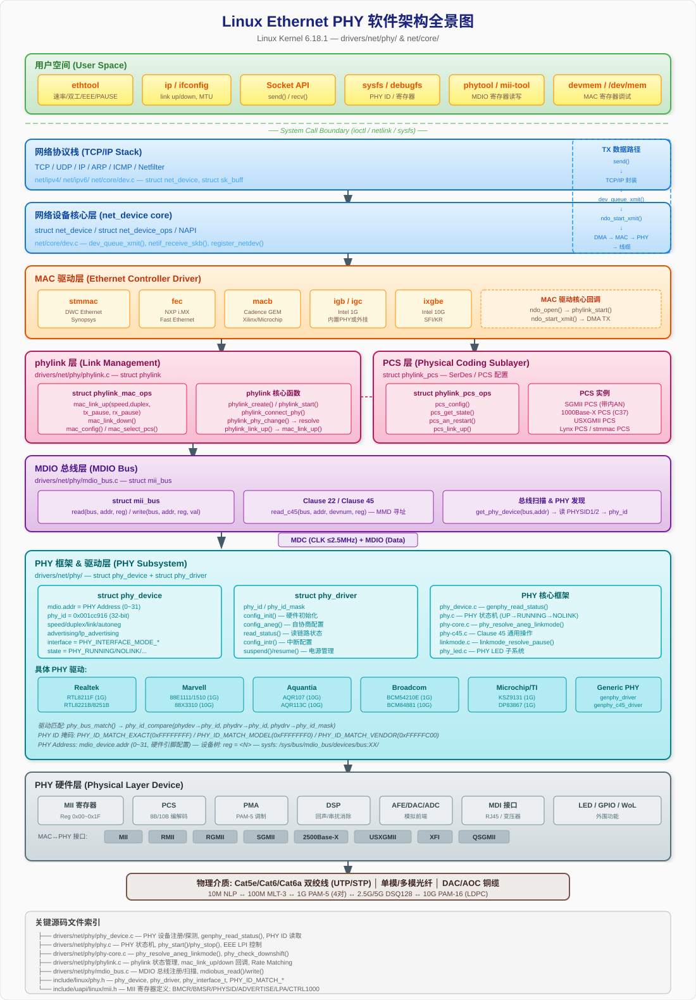

基于 Linux 6.18.1 内核源码分析
源码路径：include/linux/phy.h、include/linux/phylink.h、include/uapi/linux/mii.h、drivers/net/phy/
内核在 include/linux/phy.h 中定义了 phy_interface_t 枚举，共 39 种接口模式（含 NA 和 MAX）：
typedef enum {
PHY_INTERFACE_MODE_NA, // 不适用 - 不触碰
PHY_INTERFACE_MODE_INTERNAL, // 无接口 - MAC 和 PHY 合一
PHY_INTERFACE_MODE_MII, // 媒体无关接口 (10/100Mbps)
PHY_INTERFACE_MODE_GMII, // 千兆媒体无关接口 (1Gbps)
PHY_INTERFACE_MODE_SGMII, // 串行千兆媒体无关接口
PHY_INTERFACE_MODE_TBI, // 十位接口
PHY_INTERFACE_MODE_REVMII, // 反向 MII
PHY_INTERFACE_MODE_RMII, // 精简 MII (10/100Mbps)
PHY_INTERFACE_MODE_REVRMII, // 反向 RMII（PHY 角色）
PHY_INTERFACE_MODE_RGMII, // 精简千兆 MII
PHY_INTERFACE_MODE_RGMII_ID, // RGMII + 内部收发延迟
PHY_INTERFACE_MODE_RGMII_RXID, // RGMII + 内部接收延迟
PHY_INTERFACE_MODE_RGMII_TXID, // RGMII + 内部发送延迟
PHY_INTERFACE_MODE_RTBI, // 精简 TBI
PHY_INTERFACE_MODE_SMII, // 串行 MII
PHY_INTERFACE_MODE_XGMII, // 万兆媒体无关接口 (10Gbps)
PHY_INTERFACE_MODE_XLGMII, // 40G 媒体无关接口
PHY_INTERFACE_MODE_MOCA, // 同轴电缆多媒体
PHY_INTERFACE_MODE_PSGMII, // 五端口 SGMII
PHY_INTERFACE_MODE_QSGMII, // 四端口 SGMII
PHY_INTERFACE_MODE_TRGMII, // Turbo RGMII
PHY_INTERFACE_MODE_100BASEX, // 100Base-X（光纤）
PHY_INTERFACE_MODE_1000BASEX, // 1000Base-X（光纤）
PHY_INTERFACE_MODE_2500BASEX, // 2500Base-X
PHY_INTERFACE_MODE_5GBASER, // 5G Base-R
PHY_INTERFACE_MODE_RXAUI, // 精简 XAUI（2x 3.125Gbps）
PHY_INTERFACE_MODE_XAUI, // 万兆附件单元接口 (4x 3.125Gbps)
PHY_INTERFACE_MODE_10GBASER, // 10G Base-R (XFI/SFI，单通道)
PHY_INTERFACE_MODE_25GBASER, // 25G Base-R
PHY_INTERFACE_MODE_USXGMII, // 通用串行万兆 MII
PHY_INTERFACE_MODE_10GKR, // 10GBASE-KR + Clause 73 自协商
PHY_INTERFACE_MODE_QUSGMII, // 四端口通用 SGMII
PHY_INTERFACE_MODE_1000BASEKX, // 1000Base-KX + Clause 73 自协商
PHY_INTERFACE_MODE_10G_QXGMII, // 10G-QXGMII (4端口 over USXGMII)
PHY_INTERFACE_MODE_50GBASER, // 50GBase-R + Clause 134 FEC
PHY_INTERFACE_MODE_LAUI, // 50G 附件单元接口
PHY_INTERFACE_MODE_100GBASEP, // 100GBase-P + Clause 134 FEC
PHY_INTERFACE_MODE_MIILITE, // MII-Lite (无 RXER/TXER/CRS/COL)
PHY_INTERFACE_MODE_MAX, // 边界标记
} phy_interface_t;| 分类 | 接口模式 | 速率 | 数据位宽 | 时钟频率 | 引脚数 | 典型应用场景 |
|---|---|---|---|---|---|---|
| 并行低速 | MII (Media Independent Interface) | 10/100M | 4bit | 2.5/25MHz | 18 | 传统嵌入式 |
| RMII (Reduced Media Independent Interface) | 10/100M | 2bit | 50MHz | 9 | 引脚受限的嵌入式 | |
| SMII (Serial Media Independent Interface) | 10/100M | 1bit | 125MHz | 4 | 多端口交换机 | |
| MII-Lite (Lite Media Independent Interface) | 10/100M | 4bit | 2.5/25MHz | 14 | 简化 MII | |
| 并行千兆 | GMII (Gigabit Media Independent Interface) | 1G | 8bit | 125MHz | 24 | 早期千兆设计 |
| RGMII (Reduced Gigabit Media Independent Interface) | 1G | 4bit DDR | 125MHz | 12 | 最广泛的千兆接口 | |
| RGMII_ID/RXID/TXID (RGMII Internal Delay variants) | 1G | 4bit DDR | 125MHz | 12 | 需要内部延迟调整 | |
| TRGMII (Turbo Reduced Gigabit Media Independent Interface) | 2G+ | 4bit DDR | >125MHz | 12 | MediaTek 交换机 | |
| 串行千兆 | SGMII (Serial Gigabit Media Independent Interface) | 10/100/1G | 1bit | 1.25GHz SerDes | 2 | 服务器/交换机最常用 |
| 1000Base-X | 1G | 1bit | 1.25GHz SerDes | 2 | 光纤模块(SFP) | |
| 1000Base-KX | 1G | 1bit | 1.25GHz SerDes | 2 | 背板互联 | |
| QSGMII (Quad Serial Gigabit Media Independent Interface) | 4x 1G | 1bit | 5GHz SerDes | 2 | 多端口交换机 | |
| PSGMII (Penta Serial Gigabit Media Independent Interface) | 5x 1G | 1bit | 6.25GHz SerDes | 2 | Qualcomm交换芯片 | |
| 多千兆 | 2500Base-X | 2.5G | 1bit | 3.125GHz SerDes | 2 | 2.5G以太网 |
| 5GBase-R | 5G | 1bit | 5.15625GHz SerDes | 2 | 5G以太网 | |
| USXGMII (Universal Serial 10 Gigabit Media Independent Interface) | 10M-10G | 1bit | 10.3125GHz SerDes | 2 | 多速率自适应 | |
| QUSGMII (Quad Universal Serial Gigabit Media Independent Interface) | 4x 2.5G | 1bit | 10.3125GHz SerDes | 2 | 4端口2.5G | |
| 10G-QXGMII | 4x 2.5G | 1bit | 10.3125GHz SerDes | 2 | 4端口 over USXGMII | |
| 万兆 | XGMII (10 Gigabit Media Independent Interface) | 10G | 32/64bit | 156.25/312.5MHz | 74 | 早期10G |
| XAUI (10 Gigabit Attachment Unit Interface) | 10G | 4x 3.125G | 3.125GHz | 8 | 10G多通道 | |
| RXAUI (Reduced 10 Gigabit Attachment Unit Interface) | 10G | 2x 6.25G | 6.25GHz | 4 | 精简 XAUI | |
| 10GBase-R (XFI/SFI) | 10G | 1bit | 10.3125GHz SerDes | 2 | 主流10G接口 | |
| 10GBase-KR | 10G | 1bit | 10.3125GHz SerDes | 2 | 背板+Clause73 AN | |
| 超高速 | 25GBase-R | 25G | 1bit | 25.78125GHz | 2 | 25G以太网 |
| 50GBase-R | 50G | 1bit | 26.5625GHz PAM4 | 2 | 50G以太网 | |
| LAUI (LAN Attachment Unit Interface) | 50G | 1bit | - | 2 | 50G附件单元接口 | |
| 100GBase-P | 100G | 1bit | - | 2 | 100G以太网 | |
| XLGMII (40 Gigabit Media Independent Interface) | 40G | 64bit | 312.5MHz | 74+ | 40G以太网 |
记忆规律：MII = Media Independent Interface，R = Reduced，S = Serial，G = Gigabit，XG = 10 Gigabit，Q = Quad（4 路），P = Penta（5 路），U = Universal。按这个规则，RGMII、QSGMII、USXGMII 这类名称可以直接按前后缀拆开记。
RGMII 接口使用 DDR（双沿采样），数据在时钟的上升沿和下降沿同时变化，需要 2ns 延迟（内部或外部）来对齐：
| 变体 | TX 延迟 | RX 延迟 | 说明 |
|---|---|---|---|
| RGMII | 外部 | 外部 | 需要 PCB 走线延迟或外部器件 |
| RGMII_ID | PHY 内部 | PHY 内部 | PHY 同时提供收发延迟 |
| RGMII_RXID | 外部 | PHY 内部 | PHY 仅提供接收延迟 |
| RGMII_TXID | PHY 内部 | 外部 | PHY 仅提供发送延迟 |
当链路协商的实际速率低于接口的原生速率时（例如 2500Base-X 接口但链路速率为 100Mbps），MAC 和 PHY 之间需要一种机制来适配速率差异。根据接口类型的不同，分为 原生多速率自适应 和 需要速率匹配（Rate Matching） 两种情况。
这类接口本身在协议层面支持多种速率，MAC 和 PHY 会自动根据链路速率调整时钟/编码：
| 接口 | 支持速率 | 自适应机制 | 说明 |
|---|---|---|---|
| MII | 10M / 100M | MAC 切换 TX_CLK（2.5MHz/25MHz） | 经典并行接口，天然多速率 |
| RMII | 10M / 100M | 固定 50MHz 时钟，10M 时每符号重复 10 次 | 时钟不变，数据率自适应 |
| GMII | 10M / 100M / 1G | MAC 切换 GTX_CLK 频率 | 向下兼容 MII 速率 |
| RGMII | 10M / 100M / 1G | 时钟自动降频（125/25/2.5 MHz） | 最常用，天然支持三速 |
| SGMII | 10M / 100M / 1G | 带内自协商（In-band AN）通告速率 | SerDes 始终 1.25GHz，通过编码适配 |
| QSGMII | 4×(10M/100M/1G) | 每端口独立 SGMII 带内自协商 | 四端口共享 SerDes |
| USXGMII | 10M ~ 10G | 带内自协商，SerDes 固定 10.3125GHz | 终极多速率接口 |
| QUSGMII | 4×(10M~2.5G) | USXGMII 多端口变体 | 四端口 over 单 SerDes |
| 10G-QXGMII | 4×(10M~2.5G) | 同 QUSGMII | USXGMII 四端口分时复用 |
| MII-Lite | 10M / 100M | 与 MII 相同 | 精简 MII |
关键点：SGMII/USXGMII 等串行接口的 SerDes 时钟保持不变，通过带内信令帧告知对端实际链路速率，PHY 内部在线速和 SerDes 速率间做适配。
这类接口只支持单一原生速率。当链路速率低于接口速率时，需要额外的 速率匹配 机制，或者 MAC 驱动必须手动切换接口模式：
| 接口 | 原生速率 | 低速处理方式 | 说明 |
|---|---|---|---|
| 1000Base-X | 1G only | ❌ 无法降速 | 光纤 802.3z，仅支持 1G |
| 2500Base-X | 2.5G only | 需要 Rate Matching 或切换到 SGMII | PHY 可用 PAUSE 帧做速率匹配 |
| 5GBase-R | 5G only | 需要 Rate Matching | 单一速率 SerDes |
| 10GBase-R (XFI/SFI) | 10G only | 需要 Rate Matching 或切换到 SGMII | PHY 内部做速率适配 |
| 10GBase-KR | 10G only | 需要 Rate Matching 或 Clause73 降速 | 背板可 AN 到低速 |
| 25GBase-R | 25G only | 需要 Rate Matching | 单一速率 |
| XGMII | 10G only | 不支持 | 并行万兆，固定速率 |
| XAUI/RXAUI | 10G only | 不支持 | 多通道万兆 |
| RGMII 变体 (TRGMII) | 2G+ | 不支持降速到标准 RGMII | 厂商定制 |
内核在 include/uapi/linux/ethtool.h 中定义了 4 种速率匹配模式：
#define RATE_MATCH_NONE 0 // 无速率匹配（接口速率=链路速率）
#define RATE_MATCH_PAUSE 1 // PHY 通过 PAUSE 帧节流 MAC 发送速率
#define RATE_MATCH_CRS 2 // PHY 通过拉高 CRS 信号阻止 MAC 发送
#define RATE_MATCH_OPEN_LOOP 3 // MAC 编程足够大的 IPG（帧间隔）PHY 驱动通过 get_rate_matching() 回调报告其支持的模式：
// Realtek RTL822xB: 在 2500Base-X 模式下使用 PAUSE 速率匹配
static int rtl822xb_get_rate_matching(struct phy_device *phydev,
phy_interface_t iface)
{
if (iface != PHY_INTERFACE_MODE_2500BASEX)
return RATE_MATCH_NONE; // 非 2500Base-X 不做匹配
// 检查是否是纯 2500Base-X 模式（而非 2500Base-X + SGMII 双模）
// 纯 2500Base-X 模式时使用 PAUSE 帧做速率匹配
return RATE_MATCH_PAUSE;
}
// Aquantia AQR107: 在 10GBase-R 和 2500Base-X 模式下使用 PAUSE
static int aqr_gen2_get_rate_matching(struct phy_device *phydev,
phy_interface_t iface)
{
if (iface == PHY_INTERFACE_MODE_10GBASER ||
iface == PHY_INTERFACE_MODE_2500BASEX)
return RATE_MATCH_PAUSE;
return RATE_MATCH_NONE;
}场景：2500Base-X 接口，链路速率协商为 100Mbps
2500Base-X (3.125Gbps SerDes)
MAC ◄──────────────────────────────────────────► PHY ◄──► 铜缆 (100Mbps)
├── MAC 以 2.5Gbps 速率发送数据帧 ──────►│
│ │
│◄── PHY 发送 PAUSE 帧节流 MAC ──────────│ ← 缓冲区快满时
│ │
│── MAC 暂停发送，等待 PAUSE 超时 ────────│
│ │──► 以 100Mbps 发到线缆
│── MAC 恢复发送 ─────────────────────────│| 场景 | 推荐接口 | 原因 |
|---|---|---|
| 1G PHY，引脚充足 | RGMII | 天然三速自适应，成熟可靠 |
| 1G PHY，引脚紧张 | SGMII | 仅 2 差分对，带内 AN 自适应 |
| 2.5G PHY，MAC 支持 SGMII+2500Base-X | 2500Base-X (高速) + SGMII (低速切换) | phylink 自动切换 |
| 2.5G PHY，MAC 仅支持 2500Base-X | 2500Base-X + Rate Matching (PAUSE) | PHY 做速率适配 |
| 多速率 PHY (10M~10G) | USXGMII | 一个 SerDes 覆盖全速率范围 |
| 10G PHY，MAC 支持 XFI | 10GBase-R + Rate Matching | PHY 内部做速率匹配 |
| 多端口交换芯片 (4×1G) | QSGMII | 4 端口共享一个 SerDes |
| 多端口交换芯片 (4×2.5G) | 10G-QXGMII 或 QUSGMII | 4 端口 over USXGMII |
┌──────────────────────────────────────────────┐
│ 用户空间 (User Space) │
│ 应用程序 (socket API) / ethtool / ip 命令 │
├──────────────────────────────────────────────┤
│ 网络协议栈 (TCP/IP Stack) │
│ TCP / UDP / IP / ARP / ICMP │
├──────────────────────────────────────────────┤
│ 网络设备核心层 (net_device core) │
│ struct net_device / struct net_device_ops │
├──────────────────────────────────────────────┤
│ MAC 驱动层 │
│ e.g., stmmac / fec / macb / igb │
│ 实现: ndo_open, ndo_start_xmit 等 │
├─────────────┬────────────────────────────────┤
│ phylink 层 │ PCS 层 │
│ (连接管理) │ struct phylink_pcs │
│ │ (SerDes/PCS 配置) │
├─────────────┴────────────────────────────────┤
│ MDIO 总线层 │
│ struct mii_bus / mdio_bus.c │
│ (PHY 寄存器读写通道) │
├──────────────────────────────────────────────┤
│ PHY 驱动层 │
│ struct phy_driver / struct phy_device │
│ drivers/net/phy/*.c │
├──────────────────────────────────────────────┤
│ PHY 硬件 (Physical Layer) │
│ Realtek RTL8211F / Aquantia AQR107 等 │
└──────────────────────────────────────────────┘完整软件架构 SVG 图（包含所有层次、数据结构、驱动实例和源码索引）：

struct net_device_ops（MAC 驱动操作集）// include/linux/netdevice.h
struct net_device_ops {
int (*ndo_init)(struct net_device *dev); // 设备初始化
int (*ndo_open)(struct net_device *dev); // ifconfig up
int (*ndo_stop)(struct net_device *dev); // ifconfig down
netdev_tx_t (*ndo_start_xmit)(struct sk_buff *skb, // 发送数据包
struct net_device *dev);
void (*ndo_set_rx_mode)(struct net_device *dev); // 设置接收模式/组播
int (*ndo_set_mac_address)(struct net_device *dev, // 设置MAC地址
void *addr);
int (*ndo_eth_ioctl)(struct net_device *dev, // ethtool ioctl
struct ifreq *ifr, int cmd);
int (*ndo_change_mtu)(struct net_device *dev, // 修改MTU
int new_mtu);
void (*ndo_tx_timeout)(struct net_device *dev, // 发送超时处理
unsigned int txqueue);
void (*ndo_get_stats64)(struct net_device *dev, // 获取统计信息
struct rtnl_link_stats64 *storage);
// ... 更多操作
};struct phy_device（PHY 设备核心结构）// include/linux/phy.h
struct phy_device {
struct mdio_device mdio; // MDIO 设备基类
const struct phy_driver *drv; // 指向 PHY 驱动
u32 phy_id; // PHY 标识符 (从寄存器2,3读取)
phy_interface_t interface; // 当前接口模式 (RGMII/SGMII等)
/* 链路状态 */
int speed; // 当前速率 (SPEED_10/100/1000/...)
int duplex; // 全双工/半双工
unsigned link:1; // 链路状态
unsigned autoneg:1; // 是否自协商
/* 能力通告 */
__ETHTOOL_DECLARE_LINK_MODE_MASK(supported); // 支持的链路模式
__ETHTOOL_DECLARE_LINK_MODE_MASK(advertising); // 当前通告的模式
__ETHTOOL_DECLARE_LINK_MODE_MASK(lp_advertising); // 对端通告的模式
/* EEE 节能以太网 */
__ETHTOOL_DECLARE_LINK_MODE_MASK(supported_eee);
__ETHTOOL_DECLARE_LINK_MODE_MASK(advertising_eee);
bool enable_tx_lpi; // 启用LPI发送
/* 中断 */
int irq; // PHY 中断号
unsigned interrupts:1; // 中断是否已启用
enum phy_state state; // PHY 状态机状态
struct phy_driver *drv; // PHY 驱动程序
void *priv; // 驱动私有数据
};struct phy_driver（PHY 驱动操作集）// include/linux/phy.h
struct phy_driver {
struct mdio_driver_common mdiodrv;
u32 phy_id; // 匹配的 PHY ID
char *name; // 驱动名称
u32 phy_id_mask; // PHY ID 掩码
u32 flags; // 标志位
const unsigned long * const features; // PHY 特性集
/* 核心回调 */
int (*soft_reset)(struct phy_device *phydev); // 软复位
int (*config_init)(struct phy_device *phydev); // 初始化配置
int (*probe)(struct phy_device *phydev); // 探测/私有数据分配
int (*get_features)(struct phy_device *phydev); // 获取硬件能力
int (*config_aneg)(struct phy_device *phydev); // 配置自协商
int (*aneg_done)(struct phy_device *phydev); // 自协商完成检查
int (*read_status)(struct phy_device *phydev); // 读取链路状态
/* 中断 */
int (*config_intr)(struct phy_device *phydev); // 配置中断
irqreturn_t (*handle_interrupt)(struct phy_device *); // 中断处理
/* 电源管理 */
int (*suspend)(struct phy_device *phydev); // 挂起
int (*resume)(struct phy_device *phydev); // 恢复
/* MMD 寄存器访问 */
int (*read_mmd)(struct phy_device *dev, int devnum, u16 regnum);
int (*write_mmd)(struct phy_device *dev, int devnum, u16 regnum, u16 val);
/* 页寄存器 */
int (*read_page)(struct phy_device *dev); // 读当前页
int (*write_page)(struct phy_device *dev, int page); // 切换页
/* 高速率匹配 */
int (*get_rate_matching)(struct phy_device *phydev, phy_interface_t iface);
/* WoL */
int (*set_wol)(struct phy_device *dev, struct ethtool_wolinfo *wol);
void (*get_wol)(struct phy_device *dev, struct ethtool_wolinfo *wol);
/* LED 控制 */
int (*led_brightness_set)(struct phy_device *dev, u8 index, ...);
int (*led_hw_is_supported)(struct phy_device *dev, u8 index, ...);
int (*led_hw_control_set)(struct phy_device *dev, u8 index, ...);
int (*led_hw_control_get)(struct phy_device *dev, u8 index, ...);
};struct phylink_mac_ops（phylink MAC 操作集）// include/linux/phylink.h
struct phylink_mac_ops {
unsigned long (*mac_get_caps)(struct phylink_config *config,
phy_interface_t interface);
struct phylink_pcs *(*mac_select_pcs)(struct phylink_config *config,
phy_interface_t interface);
int (*mac_prepare)(struct phylink_config *config, unsigned int mode,
phy_interface_t iface);
void (*mac_config)(struct phylink_config *config, unsigned int mode,
const struct phylink_link_state *state);
int (*mac_finish)(struct phylink_config *config, unsigned int mode,
phy_interface_t iface);
void (*mac_link_down)(struct phylink_config *config, unsigned int mode,
phy_interface_t interface);
void (*mac_link_up)(struct phylink_config *config,
struct phy_device *phy, unsigned int mode,
phy_interface_t interface, int speed, int duplex,
bool tx_pause, bool rx_pause);
void (*mac_disable_tx_lpi)(struct phylink_config *config);
int (*mac_enable_tx_lpi)(struct phylink_config *config, u32 timer,
bool tx_clk_stop);
}; ┌──────────┐
│ DOWN │ <── 初始/关闭状态
└────┬─────┘
│ phy_start()
┌────▼─────┐
│ UP │ <── 启动状态
└────┬─────┘
│ 检测到链路
┌────▼─────┐
┌───────│ RUNNING │ <── 正常运行
│ └────┬─────┘
│ │ 链路丢失
│ ┌────▼─────┐
│ │ NOLINK │ <── 无链路
│ └────┬─────┘
│ │ 检测到链路
│ ▼
│ 回到 RUNNING
│
│ phy_stop()
└────► DOWN发送路径 (TX):
应用层 send() → socket → TCP/IP → dev_queue_xmit()
→ ndo_start_xmit() → DMA → MAC → PHY → 线缆
接收路径 (RX):
线缆 → PHY → MAC → DMA 中断 → NAPI poll
→ napi_gro_receive() → netif_receive_skb()
→ 协议栈 → socket → 应用层 recv()MAC ──── MDIO Bus ──── PHY0 (addr=0)
│──────── PHY1 (addr=1)
│──────── PHY2 (addr=2)
└──────── ...
MDIO 协议：
- MDC: 时钟线（MAC 驱动，最高 2.5MHz）
- MDIO: 双向数据线
- Clause 22: 5位寄存器地址空间（0-31），适用于1G以下
- Clause 45: 扩展寻址（Device + Register），适用于多千兆/万兆EEE（节能以太网）由 IEEE 802.3az (2010) 标准定义，后续被整合到 IEEE 802.3-2022 中。其核心思想是：以太网链路在大部分时间处于空闲状态，此时仍保持全功率运行是浪费。EEE 允许在无数据传输时进入 LPI（Low Power Idle） 模式，关闭 PHY 的大部分模拟电路，节省 50%-80% 的功耗。
tx_lpi_timer 超时
┌──────────┐ ┌──────────────┐ ┌────────────┐
│ Active │────▶│ LPI Request │────▶│ LPI (Quiet)│
│ (正常传输) │ │ (发送 LPI │ │ (低功耗 │
│ │◀────│ 信号) │ │ 休眠) │
└──────────┘ └──────────────┘ └─────┬──────┘
▲ │
│ ┌──────────────┐ │ 有数据要发
└───────────│ Wake │◀────────────┘
│ (唤醒恢复) │
│ Tw 恢复时间 │
└──────────────┘
状态说明：
Active → 正常传输数据，全功率
LPI Request→ MAC 发送 LPI 信号通知 PHY 即将休眠
Quiet → PHY 关闭 AFE/PLL 等模拟电路，仅保持基本同步
Refresh → 周期性短暂唤醒，维持链路同步（防止失锁）
Wake → 收到数据后发送唤醒信号，等待 Tw 时间恢复| 参数 | 100BASE-TX | 1000BASE-T | 10GBASE-T | 2.5G/5GBASE-T |
|---|---|---|---|---|
| Ts (Sleep 进入时间) | 200μs | 182μs | 2.88μs | ~3μs |
| Tw (Wake 恢复时间) | 30μs | 16.5μs | 4.48μs | ~5μs |
| Tq (Quiet 持续时间) | 25ms | 2ms | 39μs | ~40μs |
| Tr (Refresh 持续时间) | 200μs | 182μs | 2.88μs | ~3μs |
| 典型节能比 | ~80% | ~60% | ~50% | ~55% |
注意：Tw（唤醒时间）直接影响延迟敏感型应用。1000BASE-T 的 16.5μs 唤醒延迟对大多数应用无感，但对高频交易等场景可能不可接受。
┌──────────────────────────────────┐
│ MAC 子层 │
│ ┌────────────────────────────┐ │
│ │ LPI Client (MAC 决策层) │ │
│ │ - 判断何时进入/退出 LPI │ │
│ │ - tx_lpi_timer 控制 │ │
│ └────────────┬───────────────┘ │
│ ┌────────────▼───────────────┐ │
│ │ LPI MAC (LPI 信号生成/检测) │ │
│ │ - 发送 LPI 编码 │ │
│ │ - 检测对端 LPI 信号 │ │
│ └────────────┬───────────────┘ │
├───────────────┼──────────────────┤
│ ┌────────────▼───────────────┐ │
│ │ PCS 子层 │ │
│ │ - LPI 编码/解码 │ │
│ │ - 1000BASE-T: 特殊空闲码 │ │
│ └────────────┬───────────────┘ │
├───────────────┼──────────────────┤
│ ┌────────────▼───────────────┐ │
│ │ PMA/AFE (模拟前端) │ │
│ │ - Quiet: 关闭 TX 驱动器 │ │
│ │ - Refresh: 短暂开启同步 │ │
│ │ - 关闭 PLL / 降低偏置电流 │ │
│ └────────────────────────────┘ │
└──────────────────────────────────┘EEE 配置结构 (include/net/eee.h):
struct eee_config {
u32 tx_lpi_timer; // LPI 进入前的等待时间 (μs)
// MAC 空闲超过此时间才发送 LPI
bool tx_lpi_enabled; // 是否允许 MAC 发送 LPI
bool eee_enabled; // EEE 总开关 (master on/off)
};PHY 设备中的 EEE 字段 (include/linux/phy.h):
struct phy_device {
// ...
__ETHTOOL_DECLARE_LINK_MODE_MASK(supported_eee); // PHY 硬件支持的 EEE 模式
__ETHTOOL_DECLARE_LINK_MODE_MASK(advertising_eee); // 当前通告的 EEE 模式
__ETHTOOL_DECLARE_LINK_MODE_MASK(eee_disabled_modes);// 被禁用的 EEE 模式
bool enable_tx_lpi; // phylink 设置: MAC 是否应发送 LPI
bool eee_active; // EEE 是否已成功协商
struct eee_config eee_cfg; // 用户 EEE 配置
};phylink 配置中的 EEE (include/linux/phylink.h):
struct phylink_config {
// ...
bool eee_rx_clk_stop_enable; // 允许 LPI 期间停止 RX 时钟
DECLARE_PHY_INTERFACE_MASK(lpi_interfaces); // 支持 LPI 的接口模式
unsigned long lpi_capabilities; // 支持 LPI 的速率 (MAC_100FD|MAC_1000FD 等)
u32 lpi_timer_default; // 默认 LPI 定时器值
bool eee_enabled_default; // 创建时是否默认启用 EEE
};
// MAC 驱动需实现的 LPI 回调:
struct phylink_mac_ops {
void (*mac_disable_tx_lpi)(struct phylink_config *config);
int (*mac_enable_tx_lpi)(struct phylink_config *config,
u32 timer, // LPI 超时 (μs)
bool tx_clk_stop); // 是否可停 TX 时钟
};| 寄存器 | MMD.Reg | 说明 |
|---|---|---|
| EEE Capability | 3.20 | PCS 支持的 EEE 速率 |
| EEE Advertisement | 7.60 | 本端通告的 EEE 速率 |
| EEE LP Ability | 7.61 | 对端通告的 EEE 速率 |
| EEE Advertisement 2 | 7.62 | 扩展 EEE 通告 (2.5G/5G) |
| EEE LP Ability 2 | 7.63 | 扩展 EEE 对端能力 |
EEE 速率能力位定义 (include/uapi/linux/mdio.h):
#define MDIO_EEE_100TX 0x0002 // 100BASE-TX EEE
#define MDIO_EEE_1000T 0x0004 // 1000BASE-T EEE
#define MDIO_EEE_10GT 0x0008 // 10GBASE-T EEE
#define MDIO_EEE_1000KX 0x0010 // 1000BASE-KX EEE
#define MDIO_EEE_10GKX4 0x0020 // 10GBASE-KX4 EEE
#define MDIO_EEE_10GKR 0x0040 // 10GBASE-KR EEE
// 扩展寄存器 (7.62):
#define MDIO_EEE_2_5GT 0x0001 // 2.5GBASE-T EEE
#define MDIO_EEE_5GT 0x0002 // 5GBASE-T EEE PHY A PHY B
│ │
① 写 EEE ADV 寄存器 (7.60) │
│──── 自协商 (AN) 交换能力 ───────▶│
│◀─── 对端 EEE 能力 ──────────────│
│ │
② 读 EEE LP Ability (7.61) │
│ │
③ 双方支持的速率取交集 │
│ │
④ eee_active = true (协商成功) │
│ │
⑤ MAC 启用 LPI │
mac_enable_tx_lpi(timer, tx_clk_stop) │
│ │
⑥ 空闲 tx_lpi_timer μs 后 │
│──── LPI 信号 ──────────────────▶│
│ 双方进入低功耗 │# 查看 EEE 状态
ethtool --show-eee eth0
# 输出示例:
# EEE status: enabled - active
# Supported EEE link modes: 100baseT/Full
# 1000baseT/Full
# Advertised EEE link modes: 100baseT/Full
# 1000baseT/Full
# Link partner advertised EEE link modes: 1000baseT/Full
# Tx LPI: 250 (us)
# 禁用 EEE（低延迟场景）
ethtool --set-eee eth0 eee off
# 启用 EEE 并设置 LPI 定时器
ethtool --set-eee eth0 eee on tx-lpi on tx-timer 500
# 仅通告 1000BASE-T EEE（不通告 100M EEE）
ethtool --set-eee eth0 eee on advertise 0x0004| 方面 | 影响 | 说明 |
|---|---|---|
| 功耗 | 降低 50-80% | 空闲链路功耗从 ~0.5W 降到 ~0.1W (1G) |
| 延迟 | 增加 Tw (16-30μs) | 唤醒恢复时间影响首包延迟 |
| 抖动 | 可能增加 | LPI 进入/退出引起的时钟恢复抖动 |
| 兼容性 | 需双端支持 | 两端都要通告 EEE 才能启用 |
| 网络监控 | 可能丢 PAUSE | LPI 期间 PAUSE 帧处理可能异常 |
最佳实践：
- 一般办公/家用场景：启用 EEE，节能效果明显
- 延迟敏感场景（VoIP、实时控制、高频交易）：禁用 EEE
- 数据中心：根据负载模式决定，突发流量多的可启用
在 Linux 内核中，EEE 的实现涉及 PHY 侧和 MAC 侧两个独立但协作的部分：
┌────────────────────────────────────────────────────────────────┐
│ EEE 控制分层 │
│ │
│ ┌─────────────────────┐ ┌─────────────────────┐ │
│ │ MAC 侧 EEE │ │ PHY 侧 EEE │ │
│ │ │ │ │ │
│ │ • mac_enable_tx_lpi │ │ • EEE 能力检测 │ │
│ │ • mac_disable_tx_lpi│ │ (读 PCS 3.20) │ │
│ │ • tx_lpi_timer 控制 │ │ • EEE 通告/协商 │ │
│ │ • tx_clk_stop 选项 │ │ (写/读 AN 7.60/61)│ │
│ │ • LPI 信号生成/检测 │ │ • eee_active 判定 │ │
│ │ │ │ • SmartEEE (PHY独立) │ │
│ └──────────┬──────────┘ └──────────┬──────────┘ │
│ │ │ │
│ │ enable_tx_lpi = true │ │
│ │◀─────────────────────────│ │
│ │ (PHY协商成功后通知MAC) │ │
│ │ │ │
│ ┌──────────▼──────────────────────────▼──────────┐ │
│ │ phylink 协调层 │ │
│ │ phy_enable_tx_lpi + mac_supports_eee │ │
│ │ → 两者都为 true 时调用 phylink_activate_lpi() │ │
│ └────────────────────────────────────────────────┘ │
└────────────────────────────────────────────────────────────────┘PHY 侧负责 EEE 的协商和物理层信号处理：
| 职责 | 实现 | 说明 |
|---|---|---|
| 能力检测 | 读 PCS Capability (MMD 3.20) | 确认 PHY 硬件支持哪些速率的 EEE |
| EEE 通告 | 写 AN EEE ADV (MMD 7.60/62) | 将 advertising_eee 写入 PHY 寄存器 |
| 协商结果 | 读 AN EEE LP (MMD 7.61/63) | 读取对端通告，取交集判断 eee_active |
| LPI 物理信号 | PHY 内部 PCS/PMA | 在 Quiet 期间关闭 AFE，Refresh 时短暂唤醒 |
| SmartEEE | PHY 独立控制 | 部分 PHY（如 Broadcom）可自主进入 LPI，无需 MAC 参与 |
内核中 PHY 侧 EEE 的核心判定逻辑（drivers/net/phy/phy.c）：
// 链路建立后，检查 EEE 是否成功协商
if (phydev->link && phydev->state != PHY_RUNNING) {
// 读取 LP 的 EEE 通告，与本地通告取交集
err = genphy_c45_eee_is_active(phydev, NULL);
phydev->eee_active = err > 0; // 交集非空 = EEE 生效
// 只有用户启用了 tx_lpi 且 EEE 协商成功才通知 MAC
phydev->enable_tx_lpi = phydev->eee_cfg.tx_lpi_enabled &&
phydev->eee_active;
} else if (!phydev->link) {
phydev->eee_active = false;
phydev->enable_tx_lpi = false; // 链路断开时清除
}genphy_c45_eee_is_active() 的判定过程：
int genphy_c45_eee_is_active(struct phy_device *phydev, unsigned long *lp)
{
// 1. 用户没启用 EEE → 直接返回 0
if (!phydev->eee_cfg.eee_enabled)
return 0;
// 2. 读对端 EEE LP Ability (MMD 7.61 / 7.63)
ret = genphy_c45_read_eee_lpa(phydev, tmp_lp);
// 3. 本地通告 ∩ 对端通告
linkmode_and(common, phydev->advertising_eee, tmp_lp);
if (linkmode_empty(common))
return 0; // 无共同 EEE 模式
// 4. 检查当前链路速率是否在共同 EEE 模式中
return phy_check_valid(phydev->speed, phydev->duplex, common);
}MAC 侧负责 LPI 信号的生成和定时：
| 职责 | 实现 | 说明 |
|---|---|---|
| LPI 发送决策 | LPI Client（MAC 硬件） | 发送队列空闲超过 tx_lpi_timer 后发送 LPI |
| LPI 信号编码 | MAC 硬件 | 在 xMII 接口上发送特殊的 LPI 编码 |
| TX 时钟停止 | 可选 (tx_clk_stop) |
LPI 期间可停止 xMII TX 时钟以进一步节能 |
| 唤醒恢复 | MAC 硬件 | 检测到发送需求时先发唤醒信号再传数据 |
MAC 驱动通过 phylink 回调实现 EEE：
// phylink MAC 操作中的 EEE 回调
struct phylink_mac_ops {
// 禁用 LPI 生成（链路断开或 EEE 关闭时调用）
void (*mac_disable_tx_lpi)(struct phylink_config *config);
// 启用并配置 LPI（链路建立且 EEE 协商成功后调用）
int (*mac_enable_tx_lpi)(struct phylink_config *config,
u32 timer, // LPI 超时 (μs)
bool tx_clk_stop); // 是否停止 TX 时钟
};
// MAC 通过 phylink_config 声明 EEE 能力:
struct phylink_config {
DECLARE_PHY_INTERFACE_MASK(lpi_interfaces); // 哪些接口模式支持 LPI
unsigned long lpi_capabilities; // 哪些速率支持 LPI (MAC_100FD|MAC_1000FD...)
u32 lpi_timer_default; // 默认 LPI 定时器值
bool eee_enabled_default; // 创建时是否默认启用 EEE
bool eee_rx_clk_stop_enable; // 是否允许 LPI 期间停止 RX 时钟
};| 维度 | PHY EEE | MAC EEE |
|---|---|---|
| 标准位置 | 802.3az PCS/PMA 层 | 802.3az MAC 子层 |
| 核心功能 | EEE 协商 + 物理层 LPI 信号 | LPI 发送决策 + 定时控制 |
| 寄存器 | MMD 3.20 (Capability)、7.60/61 (ADV/LP) | MAC 控制器内部 EEE 寄存器 |
| 内核代码 | drivers/net/phy/phy-c45.c |
MAC 驱动 + phylink |
| 控制接口 | phy_support_eee() / phy_disable_eee() |
mac_enable_tx_lpi() / mac_disable_tx_lpi() |
| 独立性 | SmartEEE 可独立工作 | 必须依赖 PHY 协商结果 |
| 配置流程 | MAC 驱动调用 phy_support_eee() → PHY 通告 |
phylink 检查 enable_tx_lpi → 调用 MAC 回调 |
部分 PHY（如 Broadcom BCM54210E、Marvell 88E1510）支持 SmartEEE，即 PHY 可以独立于 MAC 进入 LPI 模式：
正常 MAC EEE: SmartEEE:
MAC 决定进入 LPI PHY 自主检测空闲
MAC → LPI 信号 → PHY PHY 直接进入 LPI
PHY 关闭 AFE PHY 对 MAC 隐藏 LPI
MAC 知道当前在 LPI MAC 不知道在 LPISmartEEE 优势：
SmartEEE 风险：
phy_disable_eee() 彻底关闭MAC 驱动 probe/attach:
│
├─ MAC 支持 EEE:
│ │
│ ├─ phylink_config.lpi_interfaces 设置支持的接口
│ ├─ phylink_config.lpi_capabilities 设置支持的速率
│ ├─ 实现 mac_enable_tx_lpi / mac_disable_tx_lpi 回调
│ └─ 调用 phy_support_eee(phydev)
│ → phydev->advertising_eee = supported_eee
│ → eee_cfg.eee_enabled = true
│ → eee_cfg.tx_lpi_enabled = true
│
└─ MAC 不支持 EEE:
└─ 调用 phy_disable_eee(phydev)
→ advertising_eee 清零
→ eee_disabled_modes 全部填充（阻止用户重新启用）
链路建立后:
PHY 状态机检测到 link up
│
├─ genphy_c45_eee_is_active()
│ ├─ 读 LP EEE (MMD 7.61)
│ ├─ advertising_eee ∩ lp_eee → common
│ └─ 检查当前速率是否在 common 中
│
├─ eee_active = true (如果协商成功)
├─ enable_tx_lpi = eee_cfg.tx_lpi_enabled && eee_active
│
└─ phylink_phy_change() 通知 phylink
├─ pl->phy_enable_tx_lpi = phydev->enable_tx_lpi
├─ pl->mac_tx_lpi_timer = eee_cfg.tx_lpi_timer
└─ phylink_link_up()
└─ if (mac_supports_eee && phy_enable_tx_lpi)
└─ phylink_activate_lpi()
├─ pcs_enable_eee() // PCS 侧 EEE 启用
└─ mac_enable_tx_lpi() // MAC 侧 LPI 生成启用链路建立后，PHY 驱动通过 read_status() 回调读取协商结果，通用实现为 genphy_read_status()：
// drivers/net/phy/phy_device.c
int genphy_read_status(struct phy_device *phydev)
{
// 1. 更新链路状态（读两次 BMSR 处理 latched-low）
err = genphy_update_link(phydev);
// 2. 如果是千兆 PHY，读取 Master/Slave 状态
if (phydev->is_gigabit_capable)
genphy_read_master_slave(phydev);
// 3. 读取对端通告（LPA 寄存器）
genphy_read_lpa(phydev);
// 4. 根据本地通告和对端通告解析速率
if (phydev->autoneg == AUTONEG_ENABLE && phydev->autoneg_complete)
phy_resolve_aneg_linkmode(phydev); // 自协商模式
else
genphy_read_status_fixed(phydev); // 强制模式
}phy_resolve_aneg_linkmode() 是自协商结果的核心解析函数：
// drivers/net/phy/phy-core.c
void phy_resolve_aneg_linkmode(struct phy_device *phydev)
{
__ETHTOOL_DECLARE_LINK_MODE_MASK(common);
// 1. 本地通告 ∩ 对端通告 = 共同能力
linkmode_and(common, phydev->lp_advertising, phydev->advertising);
// 2. 从共同能力中选择最高速率+全双工优先
c = phy_caps_lookup_by_linkmode(common);
if (c) {
phydev->speed = c->speed; // 协商后的速率
phydev->duplex = c->duplex; // 协商后的双工
}
// 3. 解析 PAUSE 流控
phy_resolve_aneg_pause(phydev);
}优先级顺序（IEEE 802.3 Table 28B-3）：
高 ←───────────────────────────────────────── 低
10GBASE-T FD > 5GBASE-T FD > 2.5GBASE-T FD >
1000BASE-T FD > 1000BASE-T HD >
100BASE-TX FD > 100BASE-T4 > 100BASE-TX HD >
10BASE-T FD > 10BASE-T HD// genphy_read_lpa() 流程：
// 1. 读 STAT1000 (Reg 0x0a) → 千兆对端能力
lpagb = phy_read(phydev, MII_STAT1000);
mii_stat1000_mod_linkmode_lpa_t(phydev->lp_advertising, lpagb);
// → 检查 LPA_1000FULL / LPA_1000HALF
// → 检查 Master/Slave 失败 (LPA_1000MSFAIL)
// 2. 读 LPA (Reg 0x05) → 百兆/十兆对端能力
lpa = phy_read(phydev, MII_LPA);
mii_lpa_mod_linkmode_lpa_t(phydev->lp_advertising, lpa);
// → 检查 LPA_100FULL / LPA_100HALF / LPA_10FULL / LPA_10HALF
// → 检查 PAUSE / ASYM_PAUSEPAUSE 帧是 IEEE 802.3x 定义的以太网链路层流控机制，用于解决收发速率不匹配导致的缓冲区溢出和丢包问题。当接收方处理不过来时，向发送方发送 PAUSE 帧请求暂停发送。
关键约束：
PAUSE 帧 (IEEE 802.3x MAC Control Frame):
┌──────────────────────────────────────────────────────────┐
│ 字段 │ 长度 │ 值 │
├─────────────────────┼─────────┼───────────────────────────┤
│ 目的 MAC 地址 │ 6 字节 │ 01:80:C2:00:00:01 │
│ │ │ (保留多播地址，不可配置) │
├─────────────────────┼─────────┼───────────────────────────┤
│ 源 MAC 地址 │ 6 字节 │ 发送方 MAC 地址 │
├─────────────────────┼─────────┼───────────────────────────┤
│ EtherType │ 2 字节 │ 0x8808 (MAC Control) │
│ │ │ (内核: ETH_P_PAUSE) │
├─────────────────────┼─────────┼───────────────────────────┤
│ MAC Control Opcode │ 2 字节 │ 0x0001 (PAUSE) │
├─────────────────────┼─────────┼───────────────────────────┤
│ Pause Time (quanta) │ 2 字节 │ 0x0000 ~ 0xFFFF │
│ │ │ 单位: 512 bit-time │
│ │ │ 1G: 1 quanta = 512ns │
│ │ │ 100M: 1 quanta = 5.12μs │
│ │ │ 0x0000 = 取消暂停(unpause) │
│ │ │ 0xFFFF = 最大暂停 33.5ms(1G)│
├─────────────────────┼─────────┼───────────────────────────┤
│ Padding │ 42 字节 │ 0x00 (填充到最小帧长 64B) │
├─────────────────────┼─────────┼───────────────────────────┤
│ FCS │ 4 字节 │ CRC-32 校验 │
└──────────────────────────────────────────────────────────┘
总帧长 = 6+6+2+2+2+42+4 = 64 字节（最小以太网帧）Pause Time 计算示例：
Pause Time = 0xFFFF（65535）→ 65535 × 512ns ≈ 33.5msPause Time = 0x0000 → 取消暂停，发送方可立即恢复| 类型 | 自协商通告位 | 描述 | 典型场景 |
|---|---|---|---|
| 对称 PAUSE (Symmetric) | ADVERTISE_PAUSE_CAP (Bit10) |
双方都可以发送和接收 PAUSE | 两端处理能力相当 |
| 非对称 PAUSE (Asymmetric) | ADVERTISE_PAUSE_ASYM (Bit11) |
仅一个方向发送 PAUSE | 服务器(高速) ↔ 交换机(可能拥塞) |
对称 PAUSE:
设备A ──PAUSE──▶ 设备B (A叫B暂停)
设备A ◀──PAUSE── 设备B (B叫A暂停)
双方都能发，双方都能收
非对称 PAUSE (仅 RX):
设备A ◀──PAUSE── 设备B (B叫A暂停)
设备A 只接收 PAUSE，不发送
典型: A=服务器(不拥塞), B=交换机(可能拥塞)
非对称 PAUSE (仅 TX):
设备A ──PAUSE──▶ 设备B (A叫B暂停)
设备A 只发送 PAUSE，不接收
典型: A=交换机(可能拥塞), B=服务器(不拥塞)发送方 (MAC A) 接收方 (MAC B)
│ │
│──── 数据帧 ────────────────────────▶ │
│──── 数据帧 ────────────────────────▶ │
│──── 数据帧 ────────────────────────▶ │ ← RX 缓冲区到达高水位线
│ │
│ ◀──── PAUSE (quanta=0x00FF) ─────── │ ← B 发送 PAUSE 帧
│ │
│ (暂停发送，启动定时器 ) │
│ (timer = 0xFF × 512ns = 130μs @1G ) │
│ │ ← B 处理积压数据
│ │
│ [定时器到期或收到 PAUSE quanta=0] │
│ │
│──── 数据帧 ────────────────────────▶ │ ← A 恢复发送
│──── 数据帧 ────────────────────────▶ │提前恢复：接收方可以在暂停期间发送 Pause Time = 0 的 PAUSE 帧，提前取消暂停。
自协商通告寄存器（Reg 0x04）中的 PAUSE 位：
// include/uapi/linux/mii.h
#define ADVERTISE_PAUSE_CAP 0x0400 // Bit10: 通告对称 PAUSE 能力
#define ADVERTISE_PAUSE_ASYM 0x0800 // Bit11: 通告非对称 PAUSE 能力
// 对端能力寄存器 (Reg 0x05)
#define LPA_PAUSE_CAP 0x0400 // Bit10: 对端支持对称 PAUSE
#define LPA_PAUSE_ASYM 0x0800 // Bit11: 对端支持非对称 PAUSE
// 流控标志
#define FLOW_CTRL_TX 0x01 // 可以发送 PAUSE 帧
#define FLOW_CTRL_RX 0x02 // 可以接收/响应 PAUSE 帧内核在 linkmode_resolve_pause() 中实现了完整的 IEEE 802.3 Table 28B-3 协商算法（drivers/net/phy/linkmode.c）：
void linkmode_resolve_pause(const unsigned long *local_adv,
const unsigned long *partner_adv,
bool *tx_pause, bool *rx_pause)
{
__ETHTOOL_DECLARE_LINK_MODE_MASK(m);
linkmode_and(m, local_adv, partner_adv); // 取交集
if (linkmode_test_bit(ETHTOOL_LINK_MODE_Pause_BIT, m)) {
// 双方都通告了 Pause → 对称全双工流控
*tx_pause = true;
*rx_pause = true;
} else if (linkmode_test_bit(ETHTOOL_LINK_MODE_Asym_Pause_BIT, m)) {
// 双方都通告了 Asym_Pause → 非对称流控
// 谁通告了 Pause，谁就接收 PAUSE 帧(即对端可以让我暂停)
*tx_pause = linkmode_test_bit(ETHTOOL_LINK_MODE_Pause_BIT,
partner_adv);
*rx_pause = linkmode_test_bit(ETHTOOL_LINK_MODE_Pause_BIT,
local_adv);
} else {
// 无共同 PAUSE 能力 → 禁用流控
*tx_pause = false;
*rx_pause = false;
}
}协商结果解释：
tx_pause = true：本地 MAC 需要响应对端的 PAUSE 帧（收到后暂停发送）rx_pause = true：本地 MAC 可以发送 PAUSE 帧给对端（对端会暂停发送）tx_pause 不是"我发送 PAUSE"，而是"我的 TX 会被 PAUSE"完整协商结果矩阵（IEEE 802.3 Table 28B-3）：
| 本地 Pause | 本地 AsymDir | 对端 Pause | 对端 AsymDir | TX PAUSE（本地TX被暂停） | RX PAUSE（本地可发PAUSE） |
|---|---|---|---|---|---|
| 0 | 0 | x | x | ✗ | ✗ |
| 0 | 1 | 0 | x | ✗ | ✗ |
| 0 | 1 | 1 | 1 | ✓ | ✗ |
| 1 | 0 | 0 | x | ✗ | ✗ |
| 1 | 0 | 1 | 0 | ✓ | ✓ |
| 1 | 0 | 1 | 1 | ✓ | ✓ |
| 1 | 1 | 0 | 1 | ✗ | ✓ |
| 1 | 1 | 1 | 0 | ✓ | ✓ |
| 1 | 1 | 1 | 1 | ✓ | ✓ |
// MAC 驱动在 probe 时声明 PAUSE 支持能力：
// 方式1: 仅支持对称 PAUSE（双方同时暂停或都不暂停）
phy_support_sym_pause(phydev);
// → 清除 Asym_Pause 位，只保留 Pause 位
// 方式2: 支持非对称 PAUSE（可单方向流控）
phy_support_asym_pause(phydev);
// → 保留 Pause 和 Asym_Pause 位
// ethtool 设置时调用：
// 对称 PAUSE 设置
phy_set_sym_pause(phydev, rx, tx, autoneg);
// 非对称 PAUSE 设置（会触发重新自协商）
phy_set_asym_pause(phydev, rx, tx);
// 获取协商后的 PAUSE 结果：
bool tx_pause, rx_pause;
phy_get_pause(phydev, &tx_pause, &rx_pause);
// 内部调用 linkmode_resolve_pause()
// 仅在全双工模式下返回有效结果ethtool 中 tx/rx 的含义与 802.3 通告位的映射关系：
// linkmode_set_pause() 转换表:
// tx rx Pause AsymDir
// 0 0 0 0 ← 完全禁用
// 0 1 1 1 ← 想接收PAUSE(让对端暂停)
// 1 0 0 1 ← 想发送PAUSE(让我暂停对端)
// 1 1 1 0 ← 双向对称PAUSE
// 注意: 这个映射有歧义问题！
// tx=0,rx=1 设置 Pause=1,AsymDir=1
// 但协商对端如果也是 Pause=1,AsymDir=0 → 结果是 TX+RX 全开
// 这与用户意图 "仅接收" 矛盾！
// 这是 IEEE 802.3 协议本身的限制。PAUSE 帧的另一重要用途是 Rate Matching（速率匹配），当 MAC-PHY 接口速率高于线缆实际速率时：
场景: 2500Base-X 接口 (3.125G SerDes), 线缆协商为 100Mbps
MAC ◀── 2500Base-X ──▶ PHY ◀── 铜缆 100Mbps ──▶ 对端
PHY 内部:
┌─────────────────────────────────────────┐
│ RX 方向 (线缆→MAC): │
│ 100Mbps 数据 → 缓冲 → 2.5Gbps 突发发 │
│ │
│ TX 方向 (MAC→线缆): │
│ 2.5Gbps 数据接收 → 缓冲 │
│ 缓冲区快满 → 向 MAC 发送 PAUSE 帧 │
│ MAC 暂停发送 │
│ 缓冲区数据以 100Mbps 速率发到线缆 │
│ 缓冲区低水位 → 发送 PAUSE(quanta=0) │
│ MAC 恢复发送 │
└─────────────────────────────────────────┘
// 内核中 Rate Match PAUSE 的处理 (phylink.c):
case RATE_MATCH_PAUSE:
// PHY 做速率匹配，MAC 以接口最大速率工作
speed = phylink_interface_max_speed(link_state.interface);
duplex = DUPLEX_FULL;
rx_pause = true; // MAC 必须响应 PAUSE 帧
break;传统 PAUSE 帧会暂停整个链路上的所有流量。PFC 是增强版本，可以按优先级队列独立暂停：
传统 PAUSE (IEEE 802.3x):
PAUSE → 整个链路暂停 → 所有流量停止（包括高优先级！）
问题: 低优先级拥塞导致高优先级也被暂停 ("head-of-line blocking")
PFC (IEEE 802.1Qbb):
PFC PAUSE → 仅暂停指定优先级 → 其他优先级正常传输
支持 8 个优先级 (CoS 0-7)
PFC 帧格式:
EtherType = 0x8808 (同 PAUSE)
Opcode = 0x0101 (PFC, 区别于 0x0001 普通 PAUSE)
Priority Enable Vector: 8位，每位对应一个优先级
Pause Quanta[0-7]: 每个优先级独立的暂停时间
典型应用:
- 数据中心: RoCE/RDMA 需要无损网络
- 存储网络: iSCSI, FCoE
- 优先级 3 = RoCE 流量 → PFC 保护，零丢包
- 优先级 0 = 普通 TCP → 允许丢包，靠 TCP 重传| 场景 | 影响 | 建议 |
|---|---|---|
| 缓冲区溢出 | PAUSE 可防止丢包 | 启用 PAUSE |
| 延迟敏感 | PAUSE 增加队列延迟 | 禁用 PAUSE，依赖上层重传 |
| 多端口交换机 | PAUSE 可能导致 HoL blocking | 使用 PFC 或禁用 PAUSE |
| Rate Matching | PAUSE 是唯一的速率适配手段 | 必须启用 |
| NFS/iSCSI | PAUSE 防止存储 IO 丢包 | 启用 PAUSE |
| TCP 大流量 | PAUSE 可能造成全局暂停 | 考虑禁用，TCP 有自己的流控 |
# ethtool 查看/配置 PAUSE
ethtool -a eth0 # 查看 PAUSE 状态
# 输出:
# Pause parameters for eth0:
# Autonegotiate: on
# RX: on ← 可以发送 PAUSE 给对端
# TX: on ← 响应对端的 PAUSE
# 禁用 PAUSE（延迟敏感场景）
ethtool -A eth0 autoneg off rx off tx off
# 启用非对称 PAUSE（仅接收方向）
ethtool -A eth0 autoneg on rx on tx off1000BASE-T 需要协商 Master/Slave 角色，Master 提供 TX 时钟源：
寄存器 CTRL1000 (Reg 0x09) 配置:
Bit 12: ENABLE_MASTER = 1 → 启用手动 M/S 配置
Bit 11: AS_MASTER = 1 → 强制为 Master
Bit 10: PREFER_MASTER = 1 → 偏好 Master
寄存器 STAT1000 (Reg 0x0a) 结果:
Bit 15: MSFAIL = 1 → M/S 协商失败（两端都强制同角色）
Bit 14: MSRES = 1 → 当前为 Master, 0 → Slave
常见故障:
两端都设置 ENABLE_MASTER + AS_MASTER → MSFAIL!
内核日志: "Master/Slave resolution failed, maybe conflicting manual settings?"// genphy_read_status_fixed() - 自协商关闭时直接读取 BMCR
int bmcr = phy_read(phydev, MII_BMCR);
// 速率解析:
if (bmcr & BMCR_SPEED1000) // Bit6=1, Bit13=0
phydev->speed = SPEED_1000;
else if (bmcr & BMCR_SPEED100) // Bit6=0, Bit13=1
phydev->speed = SPEED_100;
else // Bit6=0, Bit13=0
phydev->speed = SPEED_10;
// 双工解析:
phydev->duplex = (bmcr & BMCR_FULLDPLX) ? DUPLEX_FULL : DUPLEX_HALF;PHY 状态机 (phy.c)
│
├─ phy_read_status() // 调用 drv->read_status()
│ ├─ phydev->speed = 1000
│ ├─ phydev->duplex = FULL
│ ├─ phydev->pause = 1
│ └─ phydev->link = 1
│
├─ phy_link_up() / phy_link_change()
│
└─ phylink_phy_change(phydev, up=true)
│
├─ pl->phy_state.speed = phydev->speed
├─ pl->phy_state.duplex = phydev->duplex
├─ pl->phy_state.pause = MLO_PAUSE_TX | MLO_PAUSE_RX
│
└─ phylink_link_up()
│
├─ 处理 Rate Matching:
│ if (RATE_MATCH_PAUSE)
│ speed = 接口最大速率, rx_pause = true
│
├─ pcs_link_up() // 配置 PCS
│
├─ mac_link_up() // 通知 MAC 驱动
│ 参数: interface, speed, duplex, tx_pause, rx_pause
│ → MAC 调整时钟/DMA/FIFO 配置
│
└─ netif_carrier_on() // 通知网络协议栈链路已建立
→ 打印: "Link is Up - 1000Mbps/Full - flow control rx/tx"当 PHY 因线缆质量差等原因降速运行时，内核会发出警告：
void phy_check_downshift(struct phy_device *phydev)
{
// 1. 计算协商后的理论最高速率
linkmode_and(common, lp_advertising, advertising);
c = phy_caps_lookup_by_linkmode(common);
speed = c->speed; // 理论应达到的速率
// 2. 比较实际速率
if (phydev->speed < speed) {
phydev_warn(phydev,
"Downshift occurred from negotiated speed %s to actual speed %s, "
"check cabling!\n",
phy_speed_to_str(speed), phy_speed_to_str(phydev->speed));
phydev->downshifted_rate = 1;
}
}
// 典型日志: "Downshift occurred from negotiated speed 1Gbps to actual speed 100Mbps, check cabling!"# 查看完整协商结果
$ ethtool eth0
Settings for eth0:
Supported ports: [ TP ]
Supported link modes: 10baseT/Half 10baseT/Full
100baseT/Half 100baseT/Full
1000baseT/Full
Supports auto-negotiation: Yes
Advertised link modes: 10baseT/Half 10baseT/Full
100baseT/Half 100baseT/Full
1000baseT/Full
Advertised auto-negotiation: Yes
Speed: 1000Mb/s ← 协商后速率
Duplex: Full ← 协商后双工
Auto-negotiation: on ← 自协商已启用
master-slave cfg: preferred slave
master-slave status: slave ← M/S 协商结果
Link detected: yes ← 链路状态
# 查看对端通告
$ ethtool eth0 | grep -A5 "Link partner"
Link partner advertised link modes: 10baseT/Half 10baseT/Full
100baseT/Half 100baseT/Full
1000baseT/Full
Link partner advertised pause frame use: Symmetric Receive-only
Link partner advertised auto-negotiation: Yes本节系统梳理两端都是 1G PHY（如 RTL8211F、88E1111 等 10/100/1000BASE-T PHY）在不同 autoneg / speed / duplex 配置组合下的链路建立结果。这是工程调试中最常遇到的问题之一。
| 模式 | ethtool 命令 | BMCR 寄存器状态 | 内核处理函数 |
|---|---|---|---|
| 自协商 (autoneg on) | ethtool -s eth0 autoneg on |
BMCR_ANENABLE=1 → 启用 AN |
genphy_config_aneg() → 通告 + 重启 AN |
| 强制 10/100M | ethtool -s eth0 autoneg off speed 100 duplex full |
BMCR_ANENABLE=0, 直接设 speed/duplex |
genphy_setup_forced() → 写 BMCR |
| "强制" 1000M | ethtool -s eth0 autoneg off speed 1000 duplex full |
BMCR_ANENABLE=1！仅通告 1000M |
genphy_config_aneg() → 限制通告为仅 1000M |
关键知识点：1000BASE-T (IEEE 802.3ab) 强制要求自协商。因为 1000BASE-T 必须通过自协商来确定 Master/Slave 角色（Master 提供 TX 时钟源）。所以内核中即使用户设置 autoneg off speed 1000，实际上仍然会启用自协商，只是将通告限制为仅 1000M。
对应内核代码：
// __genphy_config_aneg() - drivers/net/phy/phy_device.c
if (phydev->autoneg == AUTONEG_ENABLE) {
// 正常自协商: 通告所有支持的速率
advert = phydev->advertising;
} else if (phydev->speed < SPEED_1000) {
// 10/100M 强制模式: 直接写 BMCR，禁用 AN
return genphy_setup_forced(phydev);
} else {
// ≥1000M "强制"模式: 仍然启用 AN，但只通告目标速率！
c = phy_caps_lookup(phydev->speed, phydev->duplex,
phydev->supported, true);
linkmode_and(fixed_advert, phydev->supported, c->linkmodes);
advert = fixed_advert; // 仅通告 1000M Full
}
// 后续统一走 genphy_config_advert() + genphy_check_and_restart_aneg()设备 A: autoneg on, 通告 10H/10F/100H/100F/1000F
设备 B: autoneg on, 通告 10H/10F/100H/100F/1000F
A B
│ │
│◀═══ FLP (Fast Link Pulse) 交换 ═══▶│
│ A的通告: {10H,10F,100H,100F,1000F} │
│ B的通告: {10H,10F,100H,100F,1000F} │
│ │
│ 取交集 → {10H,10F,100H,100F,1000F} │
│ 选最高优先级 → 1000BASE-T Full │
│ │
│ M/S 协商 → A=Master, B=Slave │
│ PAUSE 协商 → 取决于 PAUSE 通告位 │
│ │
✓ 结果: 1000Mbps / Full / Link UP ✓完整速率优先级（IEEE 802.3 Table 28B-2，从高到低）：
| 优先级 | 速率/双工 | 对应 LPA 位 |
|---|---|---|
| 1 (最高) | 1000BASE-T Full | STAT1000.LPA_1000FULL |
| 2 | 1000BASE-T Half | STAT1000.LPA_1000HALF |
| 3 | 100BASE-TX Full | LPA_100FULL |
| 4 | 100BASE-T4 | LPA_100BASE4 |
| 5 | 100BASE-TX Half | LPA_100HALF |
| 6 | 10BASE-T Full | LPA_10FULL |
| 7 (最低) | 10BASE-T Half | LPA_10HALF |
注意：1000BASE-T Half 虽然在标准中定义，但几乎没有设备支持。Linux 内核中大多数 PHY 驱动不通告此模式。
限制通告速率的场景：
# A 只通告 100M，B 通告全部
ethtool -s eth0 autoneg on advertise 0x00F # A: 10H/10F/100H/100F
# B: 默认通告 10H/10F/100H/100F/1000F
# 结果: 交集={10H,10F,100H,100F}, 最高=100M Full ✓
# 注意: Link UP，但是降速到 100M
# A 只通告 1000M Full
ethtool -s eth0 autoneg on advertise 0x20 # A: 1000F only
# B: 默认通告全部
# 结果: 交集={1000F}, Link UP at 1000M Full ✓
# 但如果 B 不通告 1000F → 交集为空 → Link DOWN ✗10/100M 强制模式 — 真正的 Forced Mode（BMCR 中 ANENABLE=0）：
| A 配置 | B 配置 | 结果 | 原因 |
|---|---|---|---|
| 100M Full | 100M Full | Link UP ✓ | 双方速率和双工完全匹配 |
| 100M Half | 100M Half | Link UP ✓ | 匹配 |
| 10M Full | 10M Full | Link UP ✓ | 匹配 |
| 10M Half | 10M Half | Link UP ✓ | 匹配 |
| 100M Full | 100M Half | Link UP ⚠️ 但双工不匹配！ | 速率匹配即建链，双工不匹配导致严重问题（见下文） |
| 100M Full | 10M Full | Link DOWN ✗ | 速率不匹配，物理层无法同步 |
| 100M Full | 10M Half | Link DOWN ✗ | 速率不匹配 |
| 10M Full | 100M Half | Link DOWN ✗ | 速率不匹配 |
致命陷阱: 双工不匹配 (Duplex Mismatch)
当两端速率相同但双工不同时（如 A=100M Full, B=100M Half），PHY 物理层仍然能同步建链！但：
- Full Duplex 端认为链路是全双工，不做 CSMA/CD 碰撞检测
- Half Duplex 端认为链路是半双工，会做碰撞检测
- 当 Full 端和 Half 端同时发送时：
- Half 端检测到碰撞，退避重传 → 延迟大增
- Full 端不检测碰撞，继续发送 → Half 端收到损坏帧 → CRC 错误
- 结果：丢包率极高、延迟剧增、吞吐量骤降，但Link is Up！
- 这是网络故障排查中最难发现的问题之一
# 双工不匹配的典型症状:
$ ethtool -S eth0 | grep -E "crc|collision|drop"
rx_crc_errors: 284756 # ← CRC 错误暴增！
tx_late_collisions: 15234 # ← 迟碰撞（仅 Half 端可见）
rx_dropped: 9821
# 如果看到这种 pattern，检查两端双工配置！1000M 强制模式的特殊行为：
| A 配置 | B 配置 | 结果 | 原因 |
|---|---|---|---|
| 1000M Full forced | 1000M Full forced | Link UP ✓ | 内核实际仍启用 AN（仅通告 1000F），双方 AN 成功 |
| 1000M Full forced | 1000M Full autoneg | Link UP ✓ | A 仅通告 1000F，B 通告全部，AN 交集=1000F |
| 1000M Full forced | 100M Full forced | Link DOWN ✗ | A 启用 AN（仅通告1000F），B 关闭 AN → 并行检测只能检测到 10/100M |
// 内核中 1000M "forced" 的实际行为:
// A: ethtool -s eth0 autoneg off speed 1000 duplex full
//
// __genphy_config_aneg() 中:
// phydev->speed = 1000 → 不走 genphy_setup_forced()
// 而是: 通告仅包含 1000BASE-T Full, 然后启用 AN
//
// 所以两端 "forced 1000M" 实际上都在做自协商！
// 只是通告范围被限制为仅 1000M Full这是实际工程中最常见的错误配置，也是 IEEE 802.3 并行检测 (Parallel Detection) 机制的应用场景。
并行检测原理：
设备 A: autoneg ON (发送 FLP)
设备 B: autoneg OFF, forced 100M Full (发送 NLP, 不发送 FLP)
A (autoneg ON) B (forced 100M Full)
│ │
│──── FLP ───────────────────────▶ │ ← B 忽略 FLP (AN 关闭)
│ │
│ ◀──── NLP (Normal Link Pulse) ── │ ← B 只发 NLP (链路测试脉冲)
│ │
│ A 收到 NLP 但没有 FLP 回应 │
│ → 触发 "并行检测" 机制 │
│ → 只能检测到信号存在，但不知道 │
│ 对端的速率/双工 │
│ │
│ 并行检测结果: │
│ → 速率: 可以检测 (10/100 通过信号) │
│ → 双工: 不可检测! 默认 Half Duplex │
│ │
⚠️ A 的结果: 100Mbps / Half Duplex ✓ B: 100Mbps / Full Duplex
─────────────────────────────────────
结果: 双工不匹配！A=Half, B=Full → 严重性能问题完整矩阵：
| A (autoneg ON) 通告 | B (autoneg OFF) 强制 | A 的协商结果 | B 的配置 | 是否匹配 | 问题 |
|---|---|---|---|---|---|
| 10H/10F/100H/100F/1000F | 10M Half | 10M Half | 10M Half | ✓ 匹配 | 无 |
| 10H/10F/100H/100F/1000F | 10M Full | 10M Half ⚠️ | 10M Full | ✗ 双工不匹配 | 并行检测默认 Half |
| 10H/10F/100H/100F/1000F | 100M Half | 100M Half | 100M Half | ✓ 匹配 | 无 |
| 10H/10F/100H/100F/1000F | 100M Full | 100M Half ⚠️ | 100M Full | ✗ 双工不匹配 | 并行检测默认 Half |
| 10H/10F/100H/100F/1000F | 1000M Full | 1000M Full ✓ | 1000M Full | ✓ 匹配 | 内核1000M仍用AN |
核心问题：并行检测（Parallel Detection）无法检测到对端的双工模式。
原理：
- FLP (Fast Link Pulse) 携带完整的自协商信息（速率、双工、PAUSE等）
- NLP (Normal Link Pulse) 只是简单的电脉冲，仅表示"链路存在"
- 强制模式端发送 NLP，不发送 FLP
- 自协商端通过信号特征可以判断速率（10M NLP 频率 vs 100M 信号模式）
- 但无法判断对端是 Full 还是 Half Duplex
- IEEE 802.3 规定并行检测结果默认为 Half Duplex
并行检测的速率检测原理：
10BASE-T 检测:
NLP = 100ns 正脉冲, 每 16ms 一次
AN端检测到这种 NLP 模式 → 判断对端是 10M
100BASE-TX 检测:
100M 物理层使用 MLT-3 编码，有持续的信号活动
AN端检测到 100M 信号特征 → 判断对端是 100M
但无法从信号判断是 Full 还是 Half → 默认 Half
1000BASE-T 检测:
因为内核中 1000M forced 实际仍使用 AN，所以不会
触发并行检测，而是正常完成自协商在两端都开启自协商的情况下，可以通过限制通告速率来控制协商结果：
| A 通告 | B 通告 | 协商结果 | 说明 |
|---|---|---|---|
| 1000F | 10H/10F/100H/100F/1000F | 1000M Full ✓ | 交集={1000F} |
| 100H/100F | 10H/10F/100H/100F/1000F | 100M Full ✓ | 交集最高=100F |
| 100F only | 10H/10F/100H/100F/1000F | 100M Full ✓ | 交集={100F} |
| 10F only | 10H/10F/100H/100F/1000F | 10M Full ✓ | 交集={10F} |
| 1000F | 100H/100F | Link DOWN ✗ | 交集为空! |
| 10H only | 100F only | Link DOWN ✗ | 交集为空! |
| 100H/100F | 100H only | 100M Half ✓ | 交集={100H} |
| 10H/10F | 10F/100F/1000F | 10M Full ✓ | 交集={10F} |
// 内核中通告限制如何生效:
// phy_resolve_aneg_linkmode() - drivers/net/phy/phy-core.c
void phy_resolve_aneg_linkmode(struct phy_device *phydev)
{
linkmode_and(common, phydev->lp_advertising, phydev->advertising);
// ↑ 取交集: 本地通告 ∩ 对端通告
c = phy_caps_lookup_by_linkmode(common);
// ↑ 从交集中选最高优先级
phydev->speed = c->speed;
phydev->duplex = c->duplex;
}1000BASE-T 必须协商 Master/Slave 角色。如果两端都强制同一角色，会导致链路失败：
| A 的 M/S 配置 | B 的 M/S 配置 | 结果 | 内核日志 |
|---|---|---|---|
| preferred slave | preferred slave | Link UP ✓ | 自动选择一个为 Master |
| preferred master | preferred slave | Link UP ✓ | A=Master, B=Slave |
| preferred master | preferred master | Link UP ✓ | 随机选择一个为 Master |
| forced master | forced master | Link DOWN ✗ | Master/Slave resolution failed, maybe conflicting manual settings? |
| forced slave | forced slave | Link DOWN ✗ | Master/Slave resolution failed, maybe conflicting manual settings? |
| forced master | forced slave | Link UP ✓ | A=Master, B=Slave |
| forced master | preferred slave | Link UP ✓ | A=Master, B=Slave |
// 检测 M/S 失败 - genphy_read_lpa()
lpagb = phy_read(phydev, MII_STAT1000);
if (lpagb & LPA_1000MSFAIL) {
int adv = phy_read(phydev, MII_CTRL1000);
if (adv & CTL1000_ENABLE_MASTER)
phydev_err(phydev, "Master/Slave resolution failed, "
"maybe conflicting manual settings?\n");
else
phydev_err(phydev, "Master/Slave resolution failed\n");
return -ENOLINK;
}# ethtool 配置 Master/Slave
ethtool -s eth0 master-slave-cfg preferred-slave # 偏好 Slave (默认)
ethtool -s eth0 master-slave-cfg preferred-master # 偏好 Master
ethtool -s eth0 master-slave-cfg forced-master # 强制 Master (危险)
ethtool -s eth0 master-slave-cfg forced-slave # 强制 Slave (危险)
# 查看当前状态
ethtool eth0 | grep master-slave
# master-slave cfg: preferred slave
# master-slave status: slave| # | A 配置 | B 配置 | 链路状态 | 协商速率 | 双工 | 风险 |
|---|---|---|---|---|---|---|
| 1 | AN on (全通告) | AN on (全通告) | UP ✓ | 1000M | Full | 无 |
| 2 | AN on (仅100F) | AN on (全通告) | UP ✓ | 100M | Full | 无 |
| 3 | AN on (仅1000F) | AN on (仅100F) | DOWN ✗ | - | - | 通告无交集 |
| 4 | AN off, 100M Full | AN off, 100M Full | UP ✓ | 100M | Full | 无 |
| 5 | AN off, 100M Full | AN off, 100M Half | UP ⚠️ | 100M | 不匹配! | 双工不匹配 |
| 6 | AN off, 100M | AN off, 10M | DOWN ✗ | - | - | 速率不匹配 |
| 7 | AN on (全通告) | AN off, 100M Full | UP ⚠️ | 100M | Half! | 并行检测默认Half |
| 8 | AN on (全通告) | AN off, 100M Half | UP ✓ | 100M | Half | 巧合匹配 |
| 9 | AN on (全通告) | AN off, 10M Half | UP ✓ | 10M | Half | 巧合匹配 |
| 10 | AN on (全通告) | AN off, 10M Full | UP ⚠️ | 10M | Half! | 并行检测默认Half |
| 11 | AN off, 1000M Full | AN off, 1000M Full | UP ✓ | 1000M | Full | 内核实际用AN |
| 12 | AN off, 1000M Full | AN on (全通告) | UP ✓ | 1000M | Full | 内核实际用AN |
| 13 | AN off, 1000M Full | AN off, 100M Full | DOWN ✗ | - | - | AN vs forced 不匹配 |
黄金准则：
# ✓ 正确: 限速到 100M (两端都 AN on)
ethtool -s eth0 autoneg on advertise 0x00F # 仅通告 10/100M
# ✗ 错误: 强制 100M Full (可能导致对端双工不匹配)
ethtool -s eth0 autoneg off speed 100 duplex full
# ✓ 如果必须强制，确保两端完全一致:
# A: ethtool -s eth0 autoneg off speed 100 duplex full
# B: ethtool -s eth0 autoneg off speed 100 duplex full
# 故障排查: 检查双工不匹配
ethtool eth0 # 查看 Speed/Duplex/Autoneg
ethtool -S eth0 | grep -i "crc\|collision\|error\|drop" # 检查错误计数器
# 典型双工不匹配症状:
# 1. rx_crc_errors 持续增长
# 2. tx_late_collisions > 0 (仅 Half 端)
# 3. 吞吐量远低于预期 (100M Full 理论100Mbps，实际可能仅30-40Mbps)
# 4. ping 延迟波动大，偶尔超时数据中心/服务器环境推荐配置：
# 1G 铜缆直连: 全部默认 autoneg on, 通告全部
ethtool -s eth0 autoneg on
# 连接旧设备 (不支持 AN): 两端都强制相同配置
ethtool -s eth0 autoneg off speed 100 duplex full # 两端都执行
# 调试链路问题: 查看完整协商信息
ethtool eth0
ethtool -S eth0
dmesg | grep -i "link\|phy\|duplex\|master\|slave\|downshift"PHY Address 和 PHY ID 是 PHY 设备管理的两个核心概念，分别解决"如何找到 PHY"和"PHY 是什么型号"两个问题。
PHY Address 是 PHY 在 MDIO 总线上的物理寻址编号，用于 MAC 通过 MDIO 协议访问特定的 PHY。
Clause 22 (标准 PHY):
PHY Address = 5 位 = 0x00 ~ 0x1F (0 ~ 31)
每条 MDIO 总线最多连接 32 个 PHY
Clause 45 (扩展 PHY):
Port Address = 5 位 = 0x00 ~ 0x1F (0 ~ 31)
同样 32 个设备，但每个设备内有多个 MMD (MDIO Manageable Device)内核定义:
// include/linux/phy.h
#define PHY_MAX_ADDR 32 // MDIO 总线上最多 32 个 PHY 地址
struct mii_bus {
// MDIO 读写函数: addr 参数就是 PHY Address
int (*read)(struct mii_bus *bus, int addr, int regnum);
int (*write)(struct mii_bus *bus, int addr, int regnum, u16 val);
// Clause 45 扩展: addr=PHY地址, devnum=MMD编号
int (*read_c45)(struct mii_bus *bus, int addr, int devnum, int regnum);
int (*write_c45)(struct mii_bus *bus, int addr, int devnum,
int regnum, u16 val);
struct mdio_device *mdio_map[PHY_MAX_ADDR]; // 地址→设备映射表
u32 phy_mask; // 扫描时忽略的地址位图
int irq[PHY_MAX_ADDR]; // 每个地址的中断号
};PHY Address 通常由硬件引脚配置，不是软件可随意更改的：
PHY 芯片地址配置方式（以 RTL8211F 为例）:
PHYAD[2:0] 引脚 → 配置 PHY 地址的低 3 位
PHYAD[4:3] → 通常固定为 0 或由其他引脚决定
硬件连接:
┌────────────────────────────────────┐
│ RTL8211F PHY 芯片 │
│ │
│ PHYAD[0] ── 上拉/下拉 ── GND (0) │
│ PHYAD[1] ── 上拉/下拉 ── GND (0) │
│ PHYAD[2] ── 上拉/下拉 ── GND (0) │
│ │
│ → PHY Address = 0b00000 = 0x00 │
└────────────────────────────────────┘
多 PHY 场景（如交换机 SoC）:
┌──────────────────┐
│ MDIO Bus │
│ ├── PHY0 (0x00) │ PHYAD[2:0] = 000
│ ├── PHY1 (0x01) │ PHYAD[2:0] = 001
│ ├── PHY2 (0x02) │ PHYAD[2:0] = 010
│ ├── PHY3 (0x03) │ PHYAD[2:0] = 011
│ └── PHY4 (0x04) │ PHYAD[2:0] = 100
└──────────────────┘/* MAC 节点中引用 PHY */
ðernet0 {
phy-handle = <&phy0>;
phy-mode = "rgmii-id";
};
/* MDIO 总线节点中声明 PHY */
&mdio {
phy0: ethernet-phy@0 { /* @0 = PHY Address 是 0 */
reg = <0>; /* reg 属性指定 PHY Address */
reset-gpios = <&gpio1 5 GPIO_ACTIVE_LOW>;
};
phy1: ethernet-phy@1 { /* @1 = PHY Address 是 1 */
reg = <1>;
};
/* 也可以通过 compatible 指定特定 PHY ID */
phy2: ethernet-phy@3 {
reg = <3>;
compatible = "ethernet-phy-id001c.c916"; /* RTL8211F */
};
};当设备树没有明确声明 PHY 时，内核会扫描 MDIO 总线上所有 32 个地址来发现 PHY：
// MDIO 总线扫描过程 (简化):
for (addr = 0; addr < PHY_MAX_ADDR; addr++) { // 0 ~ 31
if (bus->phy_mask & (1 << addr))
continue; // 跳过被屏蔽的地址
// 尝试读取该地址上的 PHY ID
phydev = get_phy_device(bus, addr, is_c45);
if (IS_ERR(phydev))
continue; // 该地址无设备
// 发现 PHY，注册设备
phy_device_register(phydev);
}PHY 设备使用 bus_id:phy_addr 格式命名：
// include/linux/phy.h
#define PHY_ID_FMT "%s:%02x" // 格式: "总线名:地址(2位hex)"
// 示例: "stmmac-0:00" → stmmac-0 总线上地址为 0x00 的 PHY
// sysfs 路径:
// /sys/bus/mdio_bus/devices/stmmac-0:00/
// /sys/bus/mdio_bus/devices/stmmac-0:00/phy_id ← PHY ID
// /sys/bus/mdio_bus/devices/stmmac-0:00/phy_interface ← 接口类型PHY ID 是 PHY 芯片的全球唯一型号标识，由 IEEE 分配的 OUI（Organizationally Unique Identifier）和厂商定义的型号/版本号组成。
PHY ID 存储在 MII 标准寄存器 Reg 0x02 (PHYSID1) 和 Reg 0x03 (PHYSID2) 中：
PHY ID = (PHYSID1 << 16) | PHYSID2 （共 32 位）
┌─────────────────────────────────────────────────────┐
│ Bit 31 Bit 0 │
│ │
│ ┌──────────────────┬──────────┬─────────────┐ │
│ │ OUI (22 bits) │ Model │ Revision │ │
│ │ [31:10] │ [9:4] │ [3:0] │ │
│ │ IEEE 分配给厂商 │ 芯片型号 │ 芯片版本 │ │
│ └──────────────────┴──────────┴─────────────┘ │
│ │
│ PHYSID1 (Reg 0x02) = Bit[31:16] = OUI[3:18] │
│ PHYSID2 (Reg 0x03) = Bit[15:0] │
│ Bit[15:10] = OUI[19:24] │
│ Bit[9:4] = Model Number │
│ Bit[3:0] = Revision Number │
└─────────────────────────────────────────────────────┘// drivers/net/phy/phy_device.c - get_phy_c22_id()
static int get_phy_c22_id(struct mii_bus *bus, int addr, u32 *phy_id)
{
int phy_reg;
// 读取 PHYSID1 (Reg 0x02) → PHY ID 高 16 位
phy_reg = mdiobus_read(bus, addr, MII_PHYSID1);
if (phy_reg < 0)
return -ENODEV;
*phy_id = phy_reg << 16;
// 读取 PHYSID2 (Reg 0x03) → PHY ID 低 16 位
phy_reg = mdiobus_read(bus, addr, MII_PHYSID2);
if (phy_reg < 0)
return -ENODEV;
*phy_id |= phy_reg;
// 如果 ID 全是 0x1FFF_FFFF，表示该地址无设备
if ((*phy_id & 0x1fffffff) == 0x1fffffff)
return -ENODEV;
return 0;
}Clause 45 PHY 的 ID 读取（每个 MMD 都有自己的 Device ID）：
// Clause 45: 每个 MMD 独立读取 ID
for (i = 1; i < num_ids; i++) {
if (!(devs_in_pkg & (1 << i)))
continue;
// 读取 MMD i 的 Device ID
phy_reg = mdiobus_c45_read(bus, addr, i, MII_PHYSID1);
c45_ids->device_ids[i] = phy_reg << 16;
phy_reg = mdiobus_c45_read(bus, addr, i, MII_PHYSID2);
c45_ids->device_ids[i] |= phy_reg;
}| 厂商 | OUI (22-bit) | PHY 型号 | 完整 PHY ID | 速率 |
|---|---|---|---|---|
| Realtek | 0x00732 (001CC) | RTL8201CP | 0x00008201 |
100M |
| RTL8201F | 0x001cc816 |
100M | ||
| RTL8208 | 0x001cc880 |
100M (8-port) | ||
| RTL8211 | 0x001cc910 |
1G | ||
| RTL8211B | 0x001cc912 |
1G | ||
| RTL8211C | 0x001cc913 |
1G | ||
| RTL8211E | 0x001cc915 |
1G | ||
| RTL8211F | 0x001cc916 |
1G | ||
| RTL8211F-VD | 0x001cc878 |
1G | ||
| RTL8226 | 0x001cc838 |
2.5G | ||
| RTL8221B | 0x001cc840 |
2.5G | ||
| RTL8251B | 0x001cc862 |
5G | ||
| Marvell | 0x005043 (01410) | 88E1101 | 0x01410c60 |
1G |
| 88E1111 | 0x01410cc0 |
1G | ||
| 88E1112 | 0x01410c90 |
1G | ||
| 88E1118 | 0x01410e10 |
1G | ||
| 88E1121R | 0x01410cb0 |
1G | ||
| 88E1318S | 0x01410e90 |
1G | ||
| 88E1510 | 0x01410dd0 |
1G | ||
| 88E1540 | 0x01410eb0 |
1G | ||
| 0x00AC2C (002B0) | 88X3310 | 0x002b09a0 |
10G | |
| 88E2110 | 0x002b09b0 |
2.5G | ||
| Aquantia (Marvell) | AQR107 | 0x03a1b4e0 |
10G | |
| Broadcom | BCM5421 | 0x002060e0 |
1G | |
| BCM54210E | 0x600d84a0 |
1G | ||
| BCM54810 | 0x03625d10 |
1G | ||
| Micrel/Microchip | KSZ9031 | 0x00221620 |
1G | |
| KSZ9131 | 0x00221640 |
1G | ||
| TI (Texas Instruments) | DP83867 | 0x2000a231 |
1G | |
| DP83869 | 0x2000a0f1 |
1G |
PHY ID = 0x001cc916 (RTL8211F)
二进制: 0000 0000 0001 1100 1100 1001 0001 0110
分解:
OUI (bit 31-10): 00 0000 0001 1100 1100 10 = 0x00732
→ IEEE OUI = 0x001CC (Realtek Semiconductor)
Model (bit 9-4): 01 0001 = 0x11 (17)
→ RTL82xx 系列型号 17
Revision (bit 3-0): 0110 = 0x6
→ 版本 6
PHY ID = 0x01410cc0 (Marvell 88E1111)
分解:
OUI (bit 31-10): 00 0001 0100 0001 0000 11 = 0x05043
→ IEEE OUI = 0x01410 (Marvell Technology)
Model (bit 9-4): 00 1100 = 0x0C (12)
Revision (bit 3-0): 0000 = 0x0内核 PHY 驱动通过 phy_id + phy_id_mask 来匹配 PHY 设备，支持不同精度的匹配：
// include/linux/phy.h
// 精确匹配: 必须每一位都匹配（包括 Revision）
#define PHY_ID_MATCH_EXTACT_MASK GENMASK(31, 0) // 0xFFFFFFFF
#define PHY_ID_MATCH_EXACT(id) .phy_id = (id), .phy_id_mask = PHY_ID_MATCH_EXTACT_MASK
// 型号匹配: 忽略 Revision (低4位)
#define PHY_ID_MATCH_MODEL_MASK GENMASK(31, 4) // 0xFFFFFFF0
#define PHY_ID_MATCH_MODEL(id) .phy_id = (id), .phy_id_mask = PHY_ID_MATCH_MODEL_MASK
// 厂商匹配: 只匹配 OUI (忽略型号和版本)
#define PHY_ID_MATCH_VENDOR_MASK GENMASK(31, 10) // 0xFFFFFC00
#define PHY_ID_MATCH_VENDOR(id) .phy_id = (id), .phy_id_mask = PHY_ID_MATCH_VENDOR_MASK匹配比较函数：
// phy_id_compare() - 判断两个 ID 在 mask 下是否匹配
static inline bool phy_id_compare(u32 id1, u32 id2, u32 mask)
{
return !((id1 ^ id2) & mask);
// XOR 后再 AND mask → 只比较 mask 为 1 的位
}驱动中的实际使用：
// drivers/net/phy/realtek/realtek_main.c
static struct phy_driver realtek_drvs[] = {
{
// 精确匹配: 只匹配 RTL8211F (id=0x001cc916)
PHY_ID_MATCH_EXACT(0x001cc916),
.name = "RTL8211F Gigabit Ethernet",
// ...
}, {
// 型号匹配: 匹配 RTL8208 所有 Revision (0x001cc88?)
PHY_ID_MATCH_MODEL(0x001cc880),
.name = "RTL8208 Fast Ethernet",
// ...
},
};
// include/linux/marvell_phy.h
#define MARVELL_PHY_ID_MASK 0xfffffff0 // = PHY_ID_MATCH_MODEL_MASK
// Marvell 驱动使用型号匹配，忽略 Revision 差异MDIO 总线扫描或设备树声明
│
▼
get_phy_device(bus, addr, is_c45)
│
├── Clause 22: get_phy_c22_id()
│ 读取 Reg 0x02 / 0x03 → 组合成 32-bit phy_id
│
└── Clause 45: get_phy_c45_ids()
读取每个 MMD 的 Device ID → c45_ids.device_ids[]
│
▼
phy_device_create(bus, addr, phy_id, is_c45, &c45_ids)
│
├── 创建 struct phy_device
├── phydev->mdio.addr = addr // 保存 PHY Address
├── phydev->phy_id = phy_id // 保存 PHY ID
└── mdiodev->bus_match = phy_bus_match // 设置匹配函数
│
▼
phy_device_register() → 触发 driver/device 匹配
│
▼
phy_bus_match(dev, drv)
│
├── 自定义匹配: phydrv->match_phy_device(phydev, phydrv)
│ (部分驱动使用，如 Realtek 通用驱动)
│
└── 通用匹配: genphy_match_phy_device(phydev, phydrv)
│
├── Clause 22:
│ phy_id_compare(phydev->phy_id,
│ phydrv->phy_id, phydrv->phy_id_mask)
│ // 设备的 phy_id 与驱动的 phy_id 在 mask 下比较
│
└── Clause 45:
遍历 c45_ids.device_ids[1..31]
任意一个 MMD 的 ID 匹配即可
│
▼
匹配成功 → 调用 phydrv->probe() → PHY 驱动接管设备Clause 45 PHY 内部被划分为多个逻辑设备（MMD），每个 MMD 有独立的寄存器空间和 Device ID：
Clause 45 PHY 内部结构:
┌──────────────────────────────────────────────┐
│ PHY (Port Address = 0x04) │
│ │
│ ┌──────────────────────┐ MMD 1 │
│ │ PMA/PMD │ Physical Medium │
│ │ Device ID: 0x002b09a0│ Attachment │
│ └──────────────────────┘ │
│ │
│ ┌──────────────────────┐ MMD 3 │
│ │ PCS │ Physical Coding │
│ │ Device ID: 0x002b09a0│ Sublayer │
│ └──────────────────────┘ │
│ │
│ ┌──────────────────────┐ MMD 7 │
│ │ AN │ Auto-Negotiation │
│ │ Device ID: 0x002b09a0│ │
│ └──────────────────────┘ │
│ │
│ ┌──────────────────────┐ MMD 30 │
│ │ Vendor Specific 1 │ 厂商自定义寄存器 │
│ │ Device ID: 0x002b09a0│ │
│ └──────────────────────┘ │
│ │
│ ┌──────────────────────┐ MMD 31 │
│ │ Vendor Specific 2 │ 厂商自定义寄存器 │
│ │ Device ID: 0x002b09a0│ │
│ └──────────────────────┘ │
└──────────────────────────────────────────────┘内核定义:
// include/uapi/linux/mdio.h
#define MDIO_MMD_PMAPMD 1 // PMA/PMD - 物理介质接入
#define MDIO_MMD_WIS 2 // WAN 接口子层
#define MDIO_MMD_PCS 3 // 物理编码子层
#define MDIO_MMD_PHYXS 4 // PHY 扩展子层
#define MDIO_MMD_DTEXS 5 // DTE 扩展子层
#define MDIO_MMD_TC 6 // 传输汇聚层
#define MDIO_MMD_AN 7 // 自协商
#define MDIO_MMD_POWER_UNIT 13 // PHY 电源单元
#define MDIO_MMD_C22EXT 29 // Clause 22 扩展
#define MDIO_MMD_VEND1 30 // 厂商特定 1
#define MDIO_MMD_VEND2 31 // 厂商特定 2Clause 45 访问方式：
Clause 22 寻址:
MDIO 帧: [ST=01][OP][PHY_ADDR(5b)][REG_ADDR(5b)][TA][DATA(16b)]
寄存器空间: 32 个寄存器 (Reg 0~31)
Clause 45 寻址:
地址帧: [ST=00][OP=00(ADDR)][PORT_ADDR(5b)][DEV_ADDR(5b)][TA][REG_ADDR(16b)]
数据帧: [ST=00][OP=01(READ)][PORT_ADDR(5b)][DEV_ADDR(5b)][TA][DATA(16b)]
寄存器空间: 每个 MMD 有 65536 个寄存器 (Reg 0~0xFFFF)
总寻址能力: 32 端口 × 32 MMD × 65536 寄存器 = 67M 个寄存器！当 MDIO 总线扫描无法正确识别 PHY 时（如 PHY ID 寄存器返回 0），可以通过 compatible 属性强制指定：
/* 方式1: 使用标准 PHY ID compatible */
phy0: ethernet-phy@0 {
reg = <0>;
compatible = "ethernet-phy-id001c.c916";
/* 格式: "ethernet-phy-id" + PHYSID1(hex4) + "." + PHYSID2(hex4) */
};
/* 方式2: 使用 IEEE 速率标识 */
phy0: ethernet-phy@0 {
reg = <0>;
compatible = "ethernet-phy-ieee802.3-c22"; /* Clause 22 通用 PHY */
/* 或 "ethernet-phy-ieee802.3-c45" for Clause 45 */
};内核解析 compatible 中的 PHY ID:
// drivers/net/phy/phy_device.c
int fwnode_get_phy_id(struct fwnode_handle *fwnode, u32 *phy_id)
{
unsigned int upper, lower;
const char *cp;
ret = fwnode_property_read_string(fwnode, "compatible", &cp);
// 解析 "ethernet-phy-idXXXX.YYYY"
if (sscanf(cp, "ethernet-phy-id%4x.%4x", &upper, &lower) != 2)
return -EINVAL;
*phy_id = ((upper & GENMASK(15, 0)) << 16) | (lower & GENMASK(15, 0));
return 0;
}# 查看 MDIO 总线上所有 PHY 设备
ls /sys/bus/mdio_bus/devices/
# stmmac-0:00 stmmac-0:01 ...
# ↑ ↑
# bus name PHY addr
# 查看某个 PHY 的 ID
cat /sys/bus/mdio_bus/devices/stmmac-0:00/phy_id
# 0x001cc916 ← RTL8211F
# 查看 PHY 接口模式
cat /sys/bus/mdio_bus/devices/stmmac-0:00/phy_interface
# rgmii-id
# 查看 PHY 绑定的驱动
ls -la /sys/bus/mdio_bus/devices/stmmac-0:00/driver
# → ../../drivers/RTL8211F Gigabit Ethernet
# 直接读取 MII 寄存器获取 PHY ID
# 使用 phytool (如果安装)
phytool read eth0/0/2 # 读取 addr=0 的 PHYSID1 (reg 2)
phytool read eth0/0/3 # 读取 addr=0 的 PHYSID2 (reg 3)
# 使用 mii-tool
mii-tool -v eth0
# 使用 ethtool
ethtool -d eth0 # dump PHY 寄存器 (需驱动支持)
# 内核启动日志
dmesg | grep -i "phy\|mdio"
# 典型输出:
# [ 2.345678] stmmac-0 mdio: MDIO device at address 0 is not found.
# [ 2.456789] stmmac-0:00: attached PHY driver RTL8211F Gigabit Ethernet (mii_bus:phy_addr=stmmac-0:00, irq=POLL)
# [ 2.567890] stmmac-0:00: phy_id=0x001cc916
# debugfs (如果启用)
cat /sys/kernel/debug/mdio_bus/stmmac-0/0 # PHY addr 0 的信息| 特性 | PHY Address | PHY ID |
|---|---|---|
| 是什么 | MDIO 总线地址 (位置) | 芯片型号标识 (身份) |
| 类比 | 门牌号/座位号 | 身份证号 |
| 位宽 | 5 位 (0~31) | 32 位 |
| 唯一性 | 同一总线内唯一 | 全球唯一 (OUI + Model) |
| 来源 | 硬件引脚配置 | 芯片出厂固化 |
| 可修改 | 不可软件修改 (硬件决定) | 不可修改 (ROM) |
| 存储位置 | MDIO 帧的地址字段 | MII Reg 0x02/0x03 |
| 用途 | MAC 访问 PHY 的寻址 | 匹配 PHY 驱动 |
| 内核字段 | phydev->mdio.addr |
phydev->phy_id |
| 设备树 | reg = |
compatible = "ethernet-phy-idXXXX.YYYY" |
| sysfs | 设备名的一部分 (:00) |
/sys/.../phy_id |
| 速率 | 标准 | 子规范 | 介质 | MAC-PHY接口 | 编码 |
|---|---|---|---|---|---|
| 10M | 802.3 (1983) | 10BASE-T | Cat3 UTP | MII | Manchester |
| 100M | 802.3u (1995) | 100BASE-TX | Cat5 UTP | MII/RMII | 4B5B+MLT-3 |
| 100BASE-FX | 光纤 | MII | 4B5B+NRZI | ||
| 1G | 802.3ab (1999) | 1000BASE-T | Cat5e UTP | GMII/RGMII/SGMII | PAM-5 (4对) |
| 802.3z (1998) | 1000BASE-X | 光纤 | GMII/SGMII | 8B/10B | |
| 1000BASE-KX | 背板 | SGMII | 8B/10B | ||
| 2.5G | 802.3bz (2016) | 2.5GBASE-T | Cat5e UTP | 2500Base-X/SGMII | PAM-16 DSQ128 |
| 5G | 802.3bz (2016) | 5GBASE-T | Cat6 UTP | 5GBase-R/USXGMII | PAM-16 DSQ128 |
| 10G | 802.3ae (2002) | 10GBASE-T | Cat6a UTP | XGMII/XFI/SFI | PAM-16 (LDPC) |
| 10GBASE-R | 光纤 | XFI/SFI | 64B/66B | ||
| 10GBASE-KR | 背板 | 10GBase-KR | 64B/66B+Clause73 | ||
| 25G | 802.3by (2016) | 25GBASE-CR/SR/LR | 铜缆/光纤 | 25GBase-R | 64B/66B+RS-FEC |
| 50G | 802.3cd (2018) | 50GBASE-R | 光纤/铜缆 | 50GBase-R | PAM4+Clause134 FEC |
| 100G | 802.3ba (2010) | 100GBASE-CR4/SR4 | 多通道 | CAUI | 64B/66B (4x25G) |
| 特性 | Clause 22 | Clause 45 |
|---|---|---|
| 寄存器空间 | 32 个（5位地址） | 65536 × 32 设备 |
| 适用速率 | ≤1G | >1G |
| 帧格式 | ST=01, OP=R/W | ST=00, OP=Addr/R/W |
| PHY 地址 | 5位 | 5位 PRTAD + 5位 DEVAD |
| 扩展方式 | 厂商页寄存器 | 标准MMD寻址 |
源码位置: drivers/net/phy/realtek/realtek_main.c
RTL8211F 是最广泛使用的 1G PHY 之一，支持 RGMII 接口。
// phy_driver 结构体注册
{
PHY_ID_MATCH_EXACT(0x001cc916),
.name = "RTL8211F Gigabit Ethernet",
.probe = rtl8211f_probe, // 探测初始化
.config_init = &rtl8211f_config_init, // 硬件配置
.read_status = rtlgen_read_status, // 读链路状态
.config_intr = &rtl8211f_config_intr, // 中断配置
.handle_interrupt = rtl8211f_handle_interrupt,
.set_wol = rtl8211f_set_wol, // Wake-on-LAN
.get_wol = rtl8211f_get_wol,
.suspend = rtl8211f_suspend,
.resume = rtl8211f_resume,
.read_page = rtl821x_read_page, // 页寄存器
.write_page = rtl821x_write_page,
.flags = PHY_ALWAYS_CALL_SUSPEND,
.led_hw_is_supported = rtl8211x_led_hw_is_supported,
.led_hw_control_get = rtl8211f_led_hw_control_get,
.led_hw_control_set = rtl8211f_led_hw_control_set,
},// 探测阶段 - 分配私有数据，配置 ALDPS 和 CLKOUT
static int rtl8211f_probe(struct phy_device *phydev) {
// 1. 调用通用 rtl821x_probe 分配 priv 结构
// 2. 读取 PHYCR1 寄存器，配置低功耗（ALDPS）
// 3. 通过设备树读取 "realtek,aldps-enable" 属性
// 4. 禁用所有 PME 事件
// 5. 检查 "wakeup-source" 属性，注册 WoL 中断
}// RTL8211F 通过 0xd08 页的寄存器配置 RGMII 延迟
#define RTL8211F_RGMII_PAGE 0xd08
#define RTL8211F_TXCR 0x11
#define RTL8211F_TX_DELAY BIT(8) // TX 延迟使能位
#define RTL8211F_RXCR 0x15
#define RTL8211F_RX_DELAY BIT(3) // RX 延迟使能位
// 根据 phydev->interface 决定设置哪些延迟
switch (phydev->interface) {
case PHY_INTERFACE_MODE_RGMII: // 无内部延迟
case PHY_INTERFACE_MODE_RGMII_ID: // TX+RX 内部延迟
case PHY_INTERFACE_MODE_RGMII_RXID: // 仅 RX 内部延迟
case PHY_INTERFACE_MODE_RGMII_TXID: // 仅 TX 内部延迟
}RTL8211F 使用寄存器 0x1f（PAGE_SELECT）来切换寄存器页：
static int rtl821x_read_page(struct phy_device *phydev) {
return __phy_read(phydev, 0x1f); // 读当前页号
}
static int rtl821x_write_page(struct phy_device *phydev, int page) {
return __phy_write(phydev, 0x1f, page); // 切换到目标页
}源码位置: drivers/net/phy/aquantia/aquantia_main.c
AQR107 支持 10G/5G/2.5G/1G/100M 多速率，使用 Clause 45 MDIO。
{
PHY_ID_MATCH_MODEL(PHY_ID_AQR107), // PHY ID: 0x03a1b4e0
.name = "Aquantia AQR107",
.probe = aqr107_probe,
.get_rate_matching = aqr_gen2_get_rate_matching,
.config_init = aqr_gen2_config_init,
.config_aneg = aqr_config_aneg, // 自协商配置
.read_status = aqr_gen2_read_status, // 读状态（多速率）
.config_intr = aqr_config_intr,
.handle_interrupt = aqr_handle_interrupt,
.get_sset_count = aqr107_get_sset_count, // 统计计数器
.get_strings = aqr107_get_strings,
.get_stats = aqr107_get_stats,
.link_change_notify = aqr107_link_change_notify,
.inband_caps = aqr_gen2_inband_caps,
.config_inband = aqr_gen2_config_inband,
},static int aqr_config_aneg(struct phy_device *phydev) {
// 1. 配置 MDI-X（交叉线检测模式）
// 2. 标准 Clause 45 自协商配置
// 3. 厂商寄存器配置 1000BASE-T / 2500BASE-T / 5000BASE-T
// MDIO_AN_VEND_PROV (0xc400) 寄存器:
// - BIT(15): 1000BASE-T Full
// - BIT(14): 1000BASE-T Half
// - BIT(11): 5000BASE-T Full
// - BIT(10): 2500BASE-T Full
// 4. 重启自协商
}// AQR107 通过厂商寄存器确定当前 SerDes 接口模式
#define MDIO_PHYXS_VEND_IF_STATUS 0xe812
// TYPE 字段映射:
// 0 = KR, 1 = KX, 2 = XFI
// 3 = USXGMII, 4 = XAUI
// 6 = SGMII, 7 = RXAUI// RTL8226/RTL8221B 2.5G PHY
{
.name = "RTL8226B_RTL8221B 2.5Gbps PHY",
.get_features = rtl822x_get_features,
.config_aneg = rtl822x_config_aneg,
.config_init = rtl822xb_config_init,
.get_rate_matching = rtl822xb_get_rate_matching,
.read_status = rtl822xb_read_status,
},
// RTL8251B 5Gbps PHY
{
.name = "RTL8251B 5Gbps PHY",
.get_features = rtl822x_get_features,
.config_aneg = rtl822x_config_aneg,
.read_status = rtl822x_read_status,
},源码位置: drivers/net/phy/marvell10g.c
数据通路（单通道 SerDes）:
SGMII PHYXS ── BASE-T PCS ── 10G PMA ── AN ── 铜缆 (≤1G)
10GBASE-KR PHYXS ── BASE-T PCS ── 10G PMA ── AN ── 铜缆 (10G)
10GBASE-KR PHYXS ── BASE-R PCS ── 光纤来源：include/uapi/linux/mii.h
| 寄存器 | 地址 | 名称 | 说明 |
|---|---|---|---|
| BMCR | 0x00 | Basic Mode Control | 基本模式控制寄存器 |
| BMSR | 0x01 | Basic Mode Status | 基本模式状态寄存器 |
| PHYSID1 | 0x02 | PHY Identifier 1 | PHY 标识符高16位 |
| PHYSID2 | 0x03 | PHY Identifier 2 | PHY 标识符低16位 |
| ADVERTISE | 0x04 | AN Advertisement | 自协商通告寄存器 |
| LPA | 0x05 | Link Partner Ability | 对端能力寄存器 |
| EXPANSION | 0x06 | AN Expansion | 自协商扩展寄存器 |
| CTRL1000 | 0x09 | 1000BASE-T Control | 千兆控制寄存器 |
| STAT1000 | 0x0a | 1000BASE-T Status | 千兆状态寄存器 |
| MMD_CTRL | 0x0d | MMD Access Control | MMD 间接访问控制 |
| MMD_DATA | 0x0e | MMD Access Data | MMD 间接访问数据 |
| ESTATUS | 0x0f | Extended Status | 扩展状态寄存器 |
Bit 15: RESET = 1 → 软复位（自动清零）
Bit 14: LOOPBACK = 1 → 启用环回模式
Bit 13: SPEED100 = 1 → 选择 100Mbps（与 Bit6 组合）
Bit 12: ANENABLE = 1 → 启用自协商
Bit 11: PDOWN = 1 → 进入低功耗模式（关闭发射器）
Bit 10: ISOLATE = 1 → 隔离 PHY（MII 接口高阻态）
Bit 9: ANRESTART = 1 → 重启自协商（自动清零）
Bit 8: FULLDPLX = 1 → 全双工模式（自协商关闭时有效）
Bit 7: CTST = 1 → 冲突测试（COL 信号测试）
Bit 6: SPEED1000 = 1 → 选择 1000Mbps (与 Bit13 组合)
Bits[5:0]: 保留
速度选择组合:
Bit6=0, Bit13=0 → 10Mbps
Bit6=0, Bit13=1 → 100Mbps
Bit6=1, Bit13=0 → 1000MbpsBit 15: 100BASE4 = 1 → 支持 100BASE-T4
Bit 14: 100FULL = 1 → 支持 100BASE-TX 全双工
Bit 13: 100HALF = 1 → 支持 100BASE-TX 半双工
Bit 12: 10FULL = 1 → 支持 10BASE-T 全双工
Bit 11: 10HALF = 1 → 支持 10BASE-T 半双工
Bit 8: ESTATEN = 1 → 扩展状态寄存器(0x0f)存在
Bit 5: ANEGCOMPLETE = 1 → 自协商已完成（只读）
Bit 4: RFAULT = 1 → 检测到远端故障
Bit 3: ANEGCAPABLE = 1 → 支持自协商
Bit 2: LSTATUS = 1 → 链路已建立（**锁存低**，需读两次确认）
Bit 1: JCD = 1 → 检测到 Jabber（10Mbps）
Bit 0: ERCAP = 1 → 支持扩展寄存器
注意: LSTATUS 是 "锁存清零" (latched low) 类型：
一旦链路断开，该位变为 0 并保持，直到被读取后才会反映当前状态。
因此需要连续读两次才能获得实时链路状态。Reg 0x02 (PHYSID1): OUI 高位 [3:18]
Reg 0x03 (PHYSID2):
Bits[15:10]: OUI 低位 [19:24]
Bits[9:4]: Model Number（型号）
Bits[3:0]: Revision Number（版本）
完整 PHY ID = (PHYSID1 << 16) | PHYSID2
示例:
RTL8211F: 0x001cc916
AQR107: 0x03a1b4e0Bit 15: NPAGE = 1 → 支持下一页
Bit 14: LPACK = 1 → 已收到链路伙伴应答
Bit 13: RFAULT = 1 → 通告远端故障
Bit 11: PAUSE_ASYM = 1 → 通告非对称 PAUSE
Bit 10: PAUSE_CAP = 1 → 通告 PAUSE 能力
Bit 9: 100BASE4 = 1 → 通告 100BASE-T4
Bit 8: 100FULL = 1 → 通告 100Mbps 全双工
Bit 7: 100HALF = 1 → 通告 100Mbps 半双工
Bit 6: 10FULL = 1 → 通告 10Mbps 全双工
Bit 5: 10HALF = 1 → 通告 10Mbps 半双工
Bits[4:0]: 选择器字段 = 00001 (IEEE 802.3)格式与 ADVERTISE 相同，但反映的是对端设备通告的能力。
Bit 12: ENABLE_MASTER = 1 → 启用手动 Master/Slave 配置
Bit 11: AS_MASTER = 1 → 配置为 Master
Bit 10: PREFER_MASTER = 1 → 偏好 Master 角色
Bit 9: 1000FULL = 1 → 通告 1000BASE-T 全双工
Bit 8: 1000HALF = 1 → 通告 1000BASE-T 半双工Bit 15: MSFAIL = 1 → Master/Slave 协商失败
Bit 14: MSRES = 1 → 当前为 Master, 0 → Slave
Bit 13: LOCALRXOK = 1 → 本地接收器状态 OK
Bit 12: REMRXOK = 1 → 远端接收器状态 OK
Bit 11: 1000FULL = 1 → 对端支持 1000BASE-T 全双工
Bit 10: 1000HALF = 1 → 对端支持 1000BASE-T 半双工用于 Clause 22 PHY 间接访问 Clause 45 寄存器空间：
Reg 0x0d (MMD_CTRL):
Bits[15:14]: 操作模式
00 = 地址模式（写入目标寄存器地址到 0x0e）
01 = 数据模式（无自增）
10 = 数据模式（读写后自增）
11 = 数据模式（仅写后自增）
Bits[4:0]: MMD Device Address (DEVAD)
Reg 0x0e (MMD_DATA):
Bits[15:0]: 地址或数据#define ADVERTISE_SGMII 0x0001 // MAC 支持 SGMII
#define LPA_SGMII 0x0001 // PHY 支持 SGMII
#define LPA_SGMII_10 0x0000 // 10Mbps
#define LPA_SGMII_100 0x0400 // 100Mbps
#define LPA_SGMII_1000 0x0800 // 1000Mbps
#define LPA_SGMII_FULL_DUPLEX 0x1000 // 全双工
#define LPA_SGMII_LINK 0x8000 // PHY 链路状态 ┌─────────────────────────────────┐
│ RTL8211F PHY │
│ │
RGMII ┌─────────┐ │ ┌──────┐ ┌─────┐ ┌────────┐ │ RJ45
TX_CLK ──▶│ │──│─▶│ │──│ │──│ Line │──│──▶ TP+/TP-
TXD[3:0]─▶│ RGMII │ │ │ MAC │ │ PCS │ │ Driver │ │ (4对)
TX_CTL ──▶│Interface│ │ │ 接口 │ │ │ │ / AFE │ │
│ 层 │ │ │ 适配 │ │ 编码│ │ 模拟前│ │
RX_CLK ◀──│ │◀─│──│ │◀─│ 解码│◀─│ 端 │◀─│──◀ TP+/TP-
RXD[3:0]◀─│ │ │ │ │ │ │ │ │ │
RX_CTL ◀──│ │ │ │ │ │ │ │ DAC/ │ │
└─────────┘ │ └──────┘ └─────┘ │ ADC │ │
│ └────────┘ │
│ ┌──────┐ ┌─────┐ ┌────────┐ │
MDC ───────│─▶│ MDIO │ │ 自协│ │ DSP │ │
MDIO ◀────▶│──│ 接口 │──│ 商 │──│ 数字信 │ │
│ └──────┘ │引擎 │ │ 号处理 │ │
│ └─────┘ └────────┘ │
│ ┌──────┐ ┌─────────────────┐ │
│ │ LED │ │ 寄存器文件 │ │
LED0 ◀─────│──│控制器│ │ (标准+厂商扩展) │ │
LED1 ◀─────│──│ │ │ │ │
LED2 ◀─────│──│ │ │ WoL / EEE / PME │ │
│ └──────┘ └─────────────────┘ │
│ ┌──────┐ │
INTB ◀─────│──│ 中断 │ VCC / GND / XTAL │
│ │控制器│ │
│ └──────┘ │
└─────────────────────────────────┘| 模块 | 功能 | 说明 |
|---|---|---|
| RGMII/GMII 接口 | MAC-PHY 数据通路 | DDR 时钟域转换，可配延迟 |
| PCS (Physical Coding Sublayer) | 编码/解码 | 1000BASE-T 使用 PAM-5 编码；100M 使用 4B5B |
| PMA (Physical Medium Attachment) | 串行化/解串行化 | 将并行数据转为线缆信号 |
| AFE (Analog Front End) | 模拟前端 | DAC 发送 + ADC 接收 + 线路驱动 |
| DSP (Digital Signal Processing) | 数字信号处理 | 回声消除、串扰消除、均衡器、时钟恢复 |
| 自协商引擎 | 链路协商 | FLP 脉冲序列交换能力，Clause 28 |
| MDIO 接口 | 管理通道 | 寄存器读写，MDC/MDIO 两线 |
| LED 控制器 | 状态指示 | 链路/活动/速度指示，可编程 |
| WoL/PME | 唤醒/电源管理 | Magic Packet 检测，PME 信号 |
10G PHY（如 AQR107）相比 1G PHY 增加了：
┌──────────────────────────────────────────────┐
│ AQR107 10G PHY │
│ │
│ ┌──────────┐ ┌──────────┐ ┌──────────┐ │
│ │ SerDes │──│ 多速率 │──│ 高速 AFE │ │
│ │(10.3125G)│ │ PCS/PMA │ │ (PAM-16) │ │
│ └──────────┘ └──────────┘ └──────────┘ │
│ │
│ ┌──────────┐ ┌──────────┐ │
│ │ 嵌入式 │ │ FEC引擎 │ ← LDPC纠错 │
│ │ CPU/FW │ │(前向纠错)│ │
│ └──────────┘ └──────────┘ │
│ │
│ ┌──────────┐ ┌──────────┐ │
│ │ Clause45 │ │ 固件 │ │
│ │ MDIO │ │ 闪存接口 │ │
│ └──────────┘ └──────────┘ │
└──────────────────────────────────────────────┘
关键差异:
- SerDes: 高速串行收发器 (XFI/USXGMII/SGMII 可切换)
- FEC: 前向纠错引擎 (LDPC for 10GBASE-T)
- 嵌入式处理器: 运行固件，处理复杂的 DSP 和协议
- 固件加载: 需要从外部 Flash 或主机加载 firmware
- 多通道 DSP: 4对差分线的回声消除和 NEXT/FEXT 串扰消除| 电源域 | 电压 | 说明 |
|---|---|---|
| 数字核心 | 1.0V / 1.1V | PCS/DSP/逻辑 |
| IO | 2.5V / 3.3V | RGMII/MDIO 接口 |
| 模拟 | 1.0V + 3.3V | AFE/PLL |
| 线路驱动 | 3.3V | 差分驱动器 |
答：这些都是 MAC 与 PHY 之间的接口标准：
| 接口 | 速率 | 数据宽度 | 时钟 | 引脚数 | 特点 |
|---|---|---|---|---|---|
| MII | 10/100M | 4bit | 25MHz(100M)/2.5MHz(10M) | 18 | 最基本的标准 |
| RMII | 10/100M | 2bit | 50MHz (外部) | 9 | 引脚减半，成本低 |
| GMII | 1G | 8bit | 125MHz | 24 | 千兆版MII，引脚太多 |
| RGMII | 1G | 4bit DDR | 125MHz | 12 | 最常用千兆接口，DDR采样 |
| SGMII | 10M-1G | SerDes | 1.25GHz | 2差分对 | 串行化，节省引脚 |
答：RGMII 使用 DDR（双沿采样），数据在时钟边沿同时变化。接收端需要在数据稳定的窗口采样，因此需要约 2ns 的延迟使时钟边沿落在数据眼图中间。
配置方式有三种：
0xd08 页），设备树指定 rgmii-id/rgmii-rxid/rgmii-txidrgmii答：1000BASE-T 自协商（Clause 28）流程：
1000FD > 1000HD > 100FD > 100HD > 10FD > 10HD
协商结果确定：内核调用 phy_resolve_aneg_linkmode()，将本地 advertising 和对端 lp_advertising 取交集（linkmode_and），然后通过 phy_caps_lookup_by_linkmode() 从交集中选出最高速率+全双工优先的组合，设置到 phydev->speed 和 phydev->duplex。PAUSE 流控也在此时根据双方通告结果解析。
如果 PHY 因线缆质量差等原因实际运行速率低于协商速率，内核会通过 phy_check_downshift() 发出 Downshift 警告。
答：
// 方法 1：读 BMSR 寄存器
// 注意：LSTATUS 是锁存低(latched low)，需要读两次
val = phy_read(phydev, MII_BMSR); // 第一次读，清除锁存
val = phy_read(phydev, MII_BMSR); // 第二次读，获取实时状态
link_up = (val & BMSR_LSTATUS) != 0;
// 方法 2：使用 genphy_read_status()
// 内核 PHY 框架自动处理答：
01，适用于 ≤1G PHY00，适用于多千兆/万兆 PHY答：
答：
phy_driver 列表匹配（phy_id & phy_id_mask）phy_device 结构体of_phy_connect() 或 phylink_of_phy_connect() 绑定 PHYphy_driver->probe() 进行驱动私有初始化phy_driver->config_init() 配置硬件答：IEEE 802.3az 标准，在链路空闲时进入低功耗模式（LPI - Low Power Idle）：
advertising_eee 和 enable_tx_lpi 控制答：
PHY_POLL）：内核定时器每秒查询 PHY 状态，简单但有延迟phydev->irq 决定：PHY_POLL(-1) 表示轮询，其他值表示中断答：
read_status() 更新 phydev->speed 和 phydev->duplexmac_link_up() 通知 MAC 驱动QEMU 默认的网络后端使用 e1000/virtio-net 等虚拟网卡，不包含真实 PHY 硬件。但我们可以通过以下方式实践以太网相关知识：
# 启动 QEMU (ARM64)
qemu-system-aarch64 \
-M virt \
-cpu cortex-a57 \
-m 1024 \
-kernel Image \
-append "root=/dev/vda console=ttyAMA0" \
-drive file=rootfs.img,format=raw \
-netdev user,id=net0,hostfwd=tcp::2222-:22 \
-device e1000,netdev=net0 \
-nographic
# 在 Guest 中执行
# 查看网卡信息
ip link show
ethtool eth0
# 读取 PHY 寄存器 (e1000 模拟了基本的 MII 寄存器)
ethtool -d eth0 # dump 寄存器
cat /sys/class/net/eth0/phydev/phy_id # PHY ID
# 查看 PHY 驱动信息
ls -la /sys/class/net/eth0/phydev/
cat /sys/class/net/eth0/phydev/phy_interface# 查看当前协商结果
ethtool eth0
# 查看支持的链路模式
ethtool eth0 | grep -A 20 "Supported link modes"
# 强制设置速率（关闭自协商）
ethtool -s eth0 speed 100 duplex full autoneg off
# 重新启用自协商
ethtool -s eth0 autoneg on
# 观察链路变化
watch -n 1 "ethtool eth0 | grep -E 'Speed|Link|Auto'"
# 查看 EEE 状态
ethtool --show-eee eth0# 在内核启动后查看 MDIO 设备
ls /sys/bus/mdio_bus/devices/
# 查看 PHY 详细信息
for phy in /sys/bus/mdio_bus/devices/*; do
echo "=== $(basename $phy) ==="
cat $phy/phy_id 2>/dev/null
cat $phy/phy_interface 2>/dev/null
cat $phy/phy_has_fixups 2>/dev/null
done
# 查看已加载的 PHY 驱动
ls /sys/bus/mdio_bus/drivers//* phy_reg_reader.c - 简单的 PHY 寄存器读取模块 */
#include <linux/module.h>
#include <linux/kernel.h>
#include <linux/netdevice.h>
#include <linux/phy.h>
#include <linux/mii.h>
static char *ifname = "eth0";
module_param(ifname, charp, 0644);
static int __init phy_reader_init(void)
{
struct net_device *dev;
struct phy_device *phydev;
int i;
dev = dev_get_by_name(&init_net, ifname);
if (!dev) {
pr_err("Cannot find device %s\n", ifname);
return -ENODEV;
}
phydev = dev->phydev;
if (!phydev) {
pr_err("No PHY attached to %s\n", ifname);
dev_put(dev);
return -ENODEV;
}
pr_info("=== PHY Info for %s ===\n", ifname);
pr_info("PHY ID: 0x%08x\n", phydev->phy_id);
pr_info("PHY Driver: %s\n", phydev->drv ? phydev->drv->name : "none");
pr_info("Interface: %s\n", phy_modes(phydev->interface));
pr_info("Speed: %d, Duplex: %s, Link: %s\n",
phydev->speed,
phydev->duplex == DUPLEX_FULL ? "Full" : "Half",
phydev->link ? "Up" : "Down");
/* 读取标准 MII 寄存器 */
pr_info("=== Standard MII Registers ===\n");
for (i = 0; i <= 0x0f; i++) {
int val = phy_read(phydev, i);
if (val >= 0)
pr_info(" Reg 0x%02x: 0x%04x\n", i, val);
}
/* 解析 BMCR */
{
int bmcr = phy_read(phydev, MII_BMCR);
if (bmcr >= 0) {
pr_info("=== BMCR (0x%04x) ===\n", bmcr);
pr_info(" Reset: %d\n", !!(bmcr & BMCR_RESET));
pr_info(" Loopback: %d\n", !!(bmcr & BMCR_LOOPBACK));
pr_info(" AN Enable: %d\n", !!(bmcr & BMCR_ANENABLE));
pr_info(" Power Down: %d\n", !!(bmcr & BMCR_PDOWN));
pr_info(" Isolate: %d\n", !!(bmcr & BMCR_ISOLATE));
}
}
/* 解析 BMSR */
{
int bmsr = phy_read(phydev, MII_BMSR);
if (bmsr >= 0) {
pr_info("=== BMSR (0x%04x) ===\n", bmsr);
pr_info(" Link Status: %d\n", !!(bmsr & BMSR_LSTATUS));
pr_info(" AN Complete: %d\n", !!(bmsr & BMSR_ANEGCOMPLETE));
pr_info(" AN Capable: %d\n", !!(bmsr & BMSR_ANEGCAPABLE));
pr_info(" 100Full: %d, 100Half: %d\n",
!!(bmsr & BMSR_100FULL), !!(bmsr & BMSR_100HALF));
pr_info(" 10Full: %d, 10Half: %d\n",
!!(bmsr & BMSR_10FULL), !!(bmsr & BMSR_10HALF));
}
}
dev_put(dev);
return 0;
}
static void __exit phy_reader_exit(void)
{
pr_info("PHY reader module unloaded\n");
}
module_init(phy_reader_init);
module_exit(phy_reader_exit);
MODULE_LICENSE("GPL");
MODULE_DESCRIPTION("Simple PHY register reader");对应 Makefile：
obj-m += phy_reg_reader.o
KDIR ?= /lib/modules/$(shell uname -r)/build
all:
make -C $(KDIR) M=$(PWD) modules
clean:
make -C $(KDIR) M=$(PWD) clean使用方法：
# 编译
make KDIR=/path/to/kernel/build
# 加载
insmod phy_reg_reader.ko ifname=eth0
# 查看输出
dmesg | tail -50
# 卸载
rmmod phy_reg_reader# 主机端创建 TAP 设备
sudo ip tuntap add dev tap0 mode tap
sudo ip addr add 192.168.100.1/24 dev tap0
sudo ip link set tap0 up
# 启动 QEMU VM1
qemu-system-aarch64 \
-M virt -cpu cortex-a57 -m 512 \
-kernel Image -append "root=/dev/vda console=ttyAMA0 ip=192.168.100.2::192.168.100.1:255.255.255.0" \
-drive file=rootfs1.img,format=raw \
-netdev tap,id=net0,ifname=tap0,script=no,downscript=no \
-device virtio-net-device,netdev=net0 \
-nographic
# 在 Guest 中
ip addr show eth0
ping 192.168.100.1
# 使用 tcpdump 抓包观察 ARP/ICMP
tcpdump -i eth0 -n -v# 在 Guest 中观察 PHY 状态变化
watch -n 1 "cat /sys/class/net/eth0/operstate && \
cat /sys/class/net/eth0/carrier && \
ethtool eth0 | head -20"
# 模拟链路断开/恢复
ip link set eth0 down
sleep 2
ip link set eth0 up
# 查看内核日志中的 PHY 状态变化
dmesg | grep -i "phy\|link\|carrier"
# 查看 PHY 统计
cat /sys/class/net/eth0/statistics/*# 注意：此实验依赖具体平台的 MAC 基地址
# 在 QEMU virt 平台 e1000 的情况下
# 查看设备的 MMIO 地址
lspci -v # 找到网卡的 BAR 地址
cat /proc/iomem | grep -i eth
# 如果有 devmem2 工具
# 读取 MAC 控制寄存器
devmem2 <BAR_ADDR+offset> w/* mdio_tool.c - 通过 ioctl 访问 PHY 寄存器 */
#include <stdio.h>
#include <stdlib.h>
#include <string.h>
#include <unistd.h>
#include <sys/ioctl.h>
#include <net/if.h>
#include <linux/mii.h>
#include <linux/sockios.h>
int main(int argc, char *argv[])
{
int fd;
struct ifreq ifr;
struct mii_ioctl_data *mii;
if (argc < 3) {
printf("Usage: %s <interface> <register> [value]\n", argv[0]);
printf(" Read: %s eth0 0\n", argv[0]);
printf(" Write: %s eth0 0 0x1140\n", argv[0]);
return 1;
}
fd = socket(AF_INET, SOCK_DGRAM, 0);
if (fd < 0) {
perror("socket");
return 1;
}
memset(&ifr, 0, sizeof(ifr));
strncpy(ifr.ifr_name, argv[1], IFNAMSIZ - 1);
mii = (struct mii_ioctl_data *)&ifr.ifr_data;
/* 获取 PHY 地址 */
if (ioctl(fd, SIOCGMIIPHY, &ifr) < 0) {
perror("SIOCGMIIPHY");
close(fd);
return 1;
}
printf("PHY address: %d\n", mii->phy_id);
mii->reg_num = strtoul(argv[2], NULL, 0);
if (argc == 4) {
/* 写寄存器 */
mii->val_in = strtoul(argv[3], NULL, 0);
if (ioctl(fd, SIOCSMIIREG, &ifr) < 0) {
perror("SIOCSMIIREG");
close(fd);
return 1;
}
printf("Write Reg 0x%02x = 0x%04x\n", mii->reg_num, mii->val_in);
} else {
/* 读寄存器 */
if (ioctl(fd, SIOCGMIIREG, &ifr) < 0) {
perror("SIOCGMIIREG");
close(fd);
return 1;
}
printf("Read Reg 0x%02x = 0x%04x\n", mii->reg_num, mii->val_out);
}
close(fd);
return 0;
}编译和使用：
# 编译（在 Guest 或交叉编译）
gcc -o mdio_tool mdio_tool.c
# 读取所有标准寄存器
for reg in $(seq 0 15); do
./mdio_tool eth0 $reg
done
# 读取 BMCR
./mdio_tool eth0 0
# 触发软复位
./mdio_tool eth0 0 0x8000
# 读取 PHY ID
./mdio_tool eth0 2
./mdio_tool eth0 3| 路径 | 说明 |
|---|---|
include/linux/phy.h |
PHY 核心头文件 (phy_interface_t, phy_device, phy_driver) |
include/linux/phylink.h |
phylink 框架头文件 |
include/linux/mdio.h |
MDIO 核心头文件 |
include/uapi/linux/mii.h |
MII 标准寄存器定义 |
include/linux/netdevice.h |
net_device / net_device_ops |
drivers/net/phy/phy_device.c |
PHY 设备核心实现 |
drivers/net/phy/phy.c |
PHY 状态机实现 |
drivers/net/phy/phylink.c |
phylink 框架实现 |
drivers/net/phy/mdio_bus.c |
MDIO 总线实现 |
drivers/net/phy/realtek/ |
Realtek PHY 驱动 |
drivers/net/phy/aquantia/ |
Aquantia 10G PHY 驱动 |
drivers/net/phy/marvell10g.c |
Marvell 10G PHY 驱动 |
drivers/net/phy/micrel.c |
Microchip/Micrel PHY 驱动 |
drivers/net/phy/broadcom.c |
Broadcom PHY 驱动 |
&mdio {
phy0: ethernet-phy@0 {
reg = <0>; // PHY 地址
compatible = "ethernet-phy-id001c.c916"; // RTL8211F
realtek,aldps-enable;
realtek,clkout-disable;
};
};
ðernet {
phy-mode = "rgmii-id"; // 接口模式
phy-handle = <&phy0>; // 引用 PHY 节点
status = "okay";
};Documentation/networking/phy.rstDocumentation/networking/phylink.rst